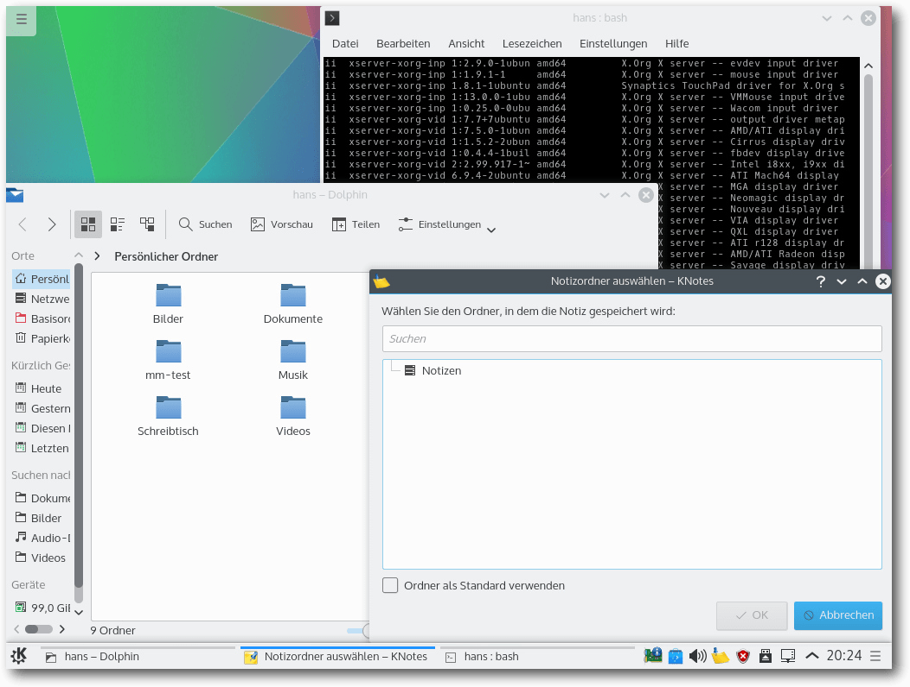

freiesMagazin Juni 2015
(ISSN 1867-7991)
Themen dieser Ausgabe sind u. a.
Meine Daten gehören mir!Nicht jeder kann seine Daten so umfangreich schützen wie Edward Snowden, als er Dokumente aus der NSA ans Licht brachte. Doch wie die Dokumente zeigen, ist heute jeder mehr oder weniger von der Überwachung über das Internet betroffen. Wo anfangen, wenn man die eigenen Daten besser schützen will? E-Mails und Festplatten lassen sich verschlüsseln, Datenspuren im Web minimieren. (weiterlesen)
Git-Tutorium – Teil 4: GitHub
Im vorigen Teil in Ausgabe 02/2015 ging es um das Rebasen sowie das Einrichten und Nutzen von Remote-Repositorys. In diesem Teil wird es rein um GitHub und dessen Workflow gehen. Darunter fällt unter anderem das Erstellen eines Repositorys und wie man sich an anderen Open-Source-Projekten auf GitHub beteiligen kann. (weiterlesen)
The Book of Unwritten Tales 2
Ob Buch, ob Film, ob Spiel – vor „The Book of Unwritten Tales 2“ von KING Art Games ist niemand sicher! Seit dem 19. Februar 2015 gibt es wieder einmal die Möglichkeit, die Fantasywelt Aventásien unsicher zu machen. Im klassischen Point-and-Click-Adventure erlebt man eine neue Geschichte rund um die Elfin Ivo, den Magier Wilbur Wetterquarz, und Nate und das Vieh. Dieser Test soll beleuchten, ob sich ein Kauf lohnt und wie das Ganze unter Linux läuft. (weiterlesen)
Zum Inhaltsverzeichnis
Inhalt
Linux allgemein
Ubuntu und Kubuntu 15.04
Meine Daten gehören mir!
Der Mai im Kernelrückblick
Anleitungen
Git-Tutorium – Teil 4: GitHub
Kurzvorstellung: renrot – Hilfsmittel für Bilder
Software
The Book of Unwritten Tales 2
Community
Rückblick: DANTE-Frühjahrstagung 2015 in Stralsund
Rezension: Grundkurs Programmieren in Java
Rezension: What if? Was wäre wenn?
Rezension: Linux – Das umfassende Handbuch
Magazin
Editorial
Leserbriefe
Veranstaltungen
Vorschau
Konventionen
Impressum
Zum Inhaltsverzeichnis
Editorial
Heartbleed und weitere Bugs
Mit Bekanntwerden des sog. „Heartbleed“-Bugs in der populären Kryprographie-Bibliothek OpenSSL ist das Thema „Sicherheit“ seit April 2014 in die breite Öffentlichkeit gerückt. Aber dies ist nicht die einzige Angriffsmöglichkeit, die in den letzten Monaten entdeckt wurde, und somit haben Systemadministratoren viel zu tun bekommen: Im September 2014 wurde zunächst „Shellshock“ bekannt – ein Bug in der Unix-Shell Bash, der durch Auswertung von String-Variablen die ungeprüfte Ausführung von Schadcode ermöglicht. Im Januar diesen Jahres wurde dann zunächst „GHOST“ bekannt – ein Pufferüberlauf-Fehler ausgelöst durch die gethostbyname()-Funktion, der ebenfalls die ungeprüfte Ausführung von Schadcode ermöglicht. Im Februar trat dann ein fataler Windows-Bug namens „JASBUG“ auf die Bühne, der allerdings eher Unternehmen betraf, die Windows im Active Directory einsetzen. Bei „FREAK“ handelt es sich um eine im März bekannt gewordenen Softwarelücke, die sich ebenfalls in den Kryptographie-Protokollen SSL und TLS versteckt. Sie beruht im Wesentlichen auf veralteten, durch US-Exportbeschränkungen auf 512 Bit (oder weniger) beschränkte Diffie-Hellman-Schlüssel, die man für einen Man-in-the-Middle-Angriff vorausberechnen kann. Blieb der April noch ohne schwerwiegenden Bug, so wurden im Mai gleich zwei bekannt: Bei „VENOM“ handelt es sich um eine Softwarelücke im Code für virtuelle Diskettenlaufwerke, die in zahlreichen Virtualisierungsplattformen wie zum Beispiel QEMU, Xen oder KVM genutzt wird und die zu unbemerktem Datenverlust bzw. -diebstahl führen kann, den man nicht oder nur sehr schwer nachweisen kann. Die zuletzt bekannt gewordene Software-Lücke namens „Logjam“ beruht ebenfalls auf zu kurzen Diffie-Hellman-Schlüsseln (512 Bit), deren Verwendung unter Umständen durch einen Man-in-the-Middle-Angriff erzwungen werden kann und die mittlerweile auf Grund ihrer Kürze als unsicher betrachtet werden müssen. Ob diese Welle an sicherheitskritischen Softwarefehlern mittlerweile ihren Höhepunkt erreicht hat oder erst noch zu einer intensiveren Suche und damit zu noch mehr sicherheitsrelevanten Bugs führen wird, kann nur die Zukunft zeigen… Und nun wünschen wir Ihnen viel Spaß mit der neuen Ausgabe. Ihre freiesMagazin-Redaktion Beitrag teilen Beitrag kommentierenZum Inhaltsverzeichnis
Ubuntu und Kubuntu 15.04
von Hans-Joachim Baader Auch Ubuntu 15.04 „Vivid Vervet“ erschien pünktlich zum geplanten Termin ein halbes Jahr nach seinem Vorgänger. Dieser Artikel beleuchtet die Neuerungen vor allem in den beiden wichtigsten Desktop-Ausgaben, Unity und KDE. Redaktioneller Hinweis: Der Artikel „Ubuntu und Kubuntu 15.04“ erschien erstmals bei Pro-Linux [1].Vorwort
Wie immer genau zum geplanten Zeitpunkt erschien Ubuntu 15.04 [2] „Vivid Vervet“ ein halbes Jahr nach Version 14.10 (siehe freiesMagazin 12/2014 [3]. Die neue Version steht in der Mitte des zweijährigen Zyklus, der zur nächsten langfristig unterstützten Version 16.04 LTS führt. Trotz dieser Tatsache sind nur wenige größere Änderungen zu finden. Ein zentraler Punkt ist der Wechsel zu Systemd als Standard-Init-System. Für Benutzer soll dieser Wechsel nicht merklich sein. Ubuntu hatte diese Änderung lange bekämpft, indem es bei Debian für einen Wechsel zu Upstart warb, dem von Ubuntu maßgeblich mitentwickelten Init-System. Erst als sich Debian für Systemd entschieden hatte, wie lange zuvor schon Fedora und Opensuse, gab Ubuntu nach. Auf dem Desktop ist das wichtigste Thema von Ubuntu 15.04 „Konvergenz“. Eine Aktualisierung für Ubuntu auf den Smartphones soll die Unterschiede zum Desktop weiter verringern. Unity selbst erfuhr allerdings kaum Änderungen, da wohl alle Aktivitäten auf das in Ubuntu Touch eingesetzte Unity 8 konzentriert werden. Intensiv wurde wieder an der Server-Version [4] gearbeitet, die aber nicht Thema dieses Artikels ist. Ubuntu Server legt den Schwerpunkt auf Virtualisierung, den weiteren Cloud-Ausbau und OpenStack. So wurde der neue Hypervisor LXD [5] für Container integriert. Mit Ubuntu wurden auch Ubuntu Kylin, Ubuntu Server, die Cloud-Images und die von der Gemeinschaft gepflegten Varianten Kubuntu, Ubuntu GNOME, Xubuntu, Lubuntu, Edubuntu und UbuntuStudio veröffentlicht. Die neueste offizielle Variante der Ubuntu-Familie ist Ubuntu Mate [6]. Es setzt auf MATE 1.8.2, den Nachfolger von GNOME 2, als Standard-Desktop. Keine neue Version gab es von Mythbuntu [7] und Edubuntu [8], die nur noch als LTS-Versionen erscheinen. Leider können all diese Varianten nicht Gegenstand des Artikels sein. Dieser wird sich auf Ubuntu und Kubuntu beschränken. Für den Artikel wurden zwei identische virtuelle Maschinen, 64 Bit, unter KVM mit jeweils 2048 MB RAM frisch aufgesetzt. In der ersten wurde Ubuntu installiert, in der anderen Kubuntu.Installation
Die Installation von Ubuntu ist immer wieder eine Freude, denn sie geht schneller und einfacher vonstatten als bei den meisten anderen Distributionen. Wenn man die Standardeinstellungen verwendet, ist sehr schnell ein lauffähiges System installiert. Für spezielle Bedürfnisse stehen aber auch die entsprechenden Optionen bereit, allerdings wird es dann aufwendiger. Die einfachste Installation bietet ein Live-System, das als ISO-Image zum Download bereitsteht. Dieses „Desktop-Image“ ist etwas über 1,1 GB groß und kann auf DVD oder einem USB-Medium verwendet werden. Gegenüber der Vorversion ist es gleich groß geblieben, das ISO der Kubuntu-Variante ist dagegen um etwa 200 MB auf 1,3 GB angewachsen.Installation von Ubuntu.
Das Installationsprogramm Ubiquity bietet ähnlich wie der Debian-Installer oder Anaconda von Fedora alle Möglichkeiten an, die Festplatten zu partitionieren und das System darauf zu installieren. Die gesamte Festplatte oder einzelne Partitionen können verschlüsselt werden. Und LVM wird unterstützt, auch in Form einer automatischen Partitionierung. Gegenüber der Vorversion hat sich an der Installation nichts Merkliches geändert. Die längst veraltete Installationsanleitung scheint nun gar nicht mehr zu existieren. Eine Installation sollte gelingen, wenn wenigstens 512 MB Speicher für die Desktop-Version bzw. 256 MB beim Server vorhanden sind. Unter Umständen soll eine Installation mit 64 MB RAM bereits möglich sein. Zu empfehlen sind jedoch auf dem Desktop mindestens 1 GB, sodass alle benötigten Anwendungen zugleich ohne zu swappen laufen können, denn nur so läuft das System vollständig flüssig.
Ausstattung
Sowohl Ubuntu als auch Kubuntu starten ähnlich schnell oder sogar schneller als in den Vorversionen. Ubuntu (nicht aber Kubuntu) setzt eine Hardware-3-D-Beschleunigung voraus, die bei Grafikkarten, die das nicht bieten, durch llvmpipe emuliert. Bei einer ausreichend schnellen CPU ist das Verfahren von der Geschwindigkeit immer noch gerade so erträglich. Das Grafiksystem ist bei X.org 7.7 geblieben, da es keine neue Version von X.org in der Zwischenzeit gab. Allerdings wurden einige Komponenten von X.org aktualisiert, darunter der X-Server 1.17 und Mesa 10.5.2. Unity liegt weiter in Version 7.3 vor. Auch sonst bringt Ubuntu 15.04 auf dem Desktop in erster Linie Korrekturen. Viele Anwendungen erhielten mehr oder weniger große Verbesserungen. LibreOffice wird in Version 4.4.2 mitgeliefert. Chromium 41 und Firefox 37 sind unter den mitgelieferten Webbrowsern zu finden. Der Linux-Kernel wurde, wie nicht anders zu erwarten, aktualisiert und ist jetzt in Version 3.19.0 enthalten. Von den vielen Verbesserungen, die er mit sich bringt, hebt Canonical in den Anmerkungen zur Veröffentlichung besonders einige Geschwindigkeitsoptimierungen für Server, neue Funktionen für Cloud-Systeme und Virtualisierung sowie erhöhte Sicherheit bei AppArmor und seccomp hervor. Das Init-System ist standardmäßig Systemd, wie bereits erwähnt, und zwar in Version 219. Während normale Nutzer kaum einmal mit dem Init-System zu tun haben und von dem Umstieg auch nichts bemerken werden, gibt es für Entwickler jedoch durchaus Auswirkungen - alles wird einfacher. Doch an die teils neuen Befehle muss man sich erst einmal gewöhnen, was mit dem Dokument Systemd für Upstart-Benutzer [9] erleichtert werden soll. Upstart ist immer noch installiert und kann per Kernel-Kommandozeile aktiviert werden. Als Syslog-Daemon wird weiterhin rsyslog verwendet, das Systemd-Journal kommt noch nicht zum Einsatz. Für Entwickler wurde „Ubuntu Make“ (früher Developer Tools Centre) erheblich ausgebaut und unterstützt nun 15 Plattformen, darunter Android NDK mit dem neuesten Android Studio IDEA, pycharm, webstorm, rubymine, phpstorm und Eclipse. Zudem sind auch der Go-Compiler Golang, die Firefox-Entwickleredition, der Editor Dartlang und die Spiele-Entwicklungsplattform Stencyl vorhanden und zahlreiche Verbesserungen wurden vorgenommen. Zudem haben sich die Entwickler die Paketmanager von Python, Node.js und Ruby vorgeknöpft und ins System integriert, so dass sie mit der nativen Paketverwaltung zusammenarbeiten und nicht in Konflikt geraten. Der Compiler GCC, der ebenso wie die wichtigsten Compilerwerkzeuge standardmäßig installiert ist, wurde nur geringfügig von Version 4.9.1 auf 4.9.2 aktualisiert. So lassen sich normale C/C++-Programme und wohl auch der Linux-Kernel ohne weitere Umstände kompilieren. Bei den Bibliotheken gingen die Entwickler wohl von der Maxime aus, dass möglichst viele externe Software direkt lauffähig sein sollte, entsprechend umfangreich ist die Installation, die von glibc 2.21 bis GStreamer 1.4 und 0.10 reicht. Python ist weiter in zwei Versionen, 2.7.9 und 3.4.3, vorinstalliert, da es immer noch nicht realistisch ist, auf Python 2 zu verzichten. Perl ist in Version 5.20.2 vorhanden, dazu gesellen sich zahlreiche Python- und Perl-Module. PulseAudio ist in Version 6.0 installiert gegenüber 4.0 in der vorigen Ausgabe. Wie gewohnt hat Root keinen direkten Zugang zum System, sondern die Benutzer der Gruppe sudo können über das Kommando sudo Befehle als Root ausführen. Der Speicherverbrauch von Unity ist gegenüber der Vorversion wieder gestiegen, was aber auch an der virtuellen Maschine oder anderen Faktoren liegen könnte. Rund 490 MB benötigt die Umgebung bei einer Bildschirmauflösung von 1024x768 allein, ohne dass irgendwelche produktive Software gestartet wurde. KDE benötigt in der Standardinstallation mit einem geöffneten Terminal-Fenster etwa 440 MB und damit ebenfalls mehr als zuvor. Ein Teil dieses Speichers wird allerdings bei Platzbedarf in den Swap ausgelagert, sodass zusätzliches RAM frei wird. Die Messung des Speicherverbrauchs der Desktops kann jeweils nur ungefähre Werte ermitteln, die zudem in Abhängigkeit von der Hardware und anderen Faktoren schwanken. Aber als Anhaltspunkt sollten sie allemal genügen.Desktop von Ubuntu 15.04 mit Firefox.
Noch kurz ein Wort zu den offiziellen Ubuntu-Varianten: Kubuntu [10] enthält in Version 15.04 erstmals Plasma 5 als Standard. Die KDE-Anwendungen werden in Version 14.12 mitgeliefert. Von diesen sind etwa die Hälfte bereits auf die KDE Frameworks 5 portiert, der Rest, darunter die PIM-Suite, nutzt noch die KDE 4-Bibliotheken. Die anderen Varianten haben nur wenige oder gar keine Änderungen bekannt gegeben. Ubuntu GNOME [11] enthält GNOME 3.14, also nicht die neueste Version, mit einer optionalen GNOME-Classic-Sitzung. Laut der Ankündigung sind nicht alle Komponenten von GNOME 3.14 integriert, die fehlenden Teile sind über ein externes Repository erhältlich. Statt GNOME-Software wird das Ubuntu Software Center verwendet und diverse neue Anwendungen wie gnome-maps, gnome-weather und Numix sind vorinstalliert. Xubuntu [12] bringt jetzt Xfce 4.12 mit. Ein Konfigurationswerkzeug für den Display-Manager LightDM kam neu hinzu. Umgebungen mit mehreren Monitoren sollen nun besser einzurichten sein. Auch die Farbschemata wurden verbessert und Qt-Anwendungen sollen besser aussehen. Lubuntu [13] enthält in dieser Version nichts wesentlich Neues. Es wird der Umstieg auf LXQt vorbereitet. Die grafische Gestaltung wurde überarbeitet und die LXDE-Komponenten aktualisiert. Ubuntu Studio [14] erhielt ein neues Metapaket ubuntustudio-audio-core, das alle essentiellen Pakete für Audio nach sich zieht. Ansonsten wurden die Neuerungen von Xubuntu übernommen. Den Benutzern wird empfohlen, trotzdem eher die neueste LTS-Version (14.04 LTS in diesem Fall) einzusetzen, da diese drei Jahre unterstützt wird, die anderen Versionen nur neun Monate. Ubuntu Kylin [15], die Ubuntu-Variante mit diversen Anwendungen und Anpassungen speziell für China, kommt mit zahlreichen Korrekturen für die Internationalisierung und hat die verschiedenen spezifischen Programme wie zum Beispiel das grafische Systemverwaltungs- und Konfigurationsprogramm Youker Assistant aktualisiert. Nicht Teil der Veröffentlichung von Ubuntu 15.04 ist eine neue Variante, Snappy Personal, mit der Canonical ausprobieren will, ob sich atomare Updates auch auf Desktop-Systemen nutzen lassen. Statt der Paketverwaltung dpkg wird dabei das snappy verwendet. Täglich aktualisiert erstellte Live-Images [16] sollen bald bereitstehen.
Unity
Nach all dem Vorgeplänkel nun zum eigentlichen Desktop. Unity, die offizielle Desktopumgebung von Ubuntu, blieb bei Version 7.3 und erhielt lediglich ein paar Korrekturen. Die einzige sichtbare Änderung ist das neue Aussehen. Somit bleibt Unity eine dezente, benutzbare Desktop-Umgebung, zu der alles Wesentliche bereits früher gesagt wurde. Der Standard-Webbrowser in Ubuntu ist Firefox, die Standard-Büro-Suite LibreOffice. Für E-Mails ist Thunderbird 31.6, dessen Icon nicht in die Startleiste eingebunden ist, zuständig. Die sonstigen installierten Programme sind im Wesentlichen die Standard-Programme von GNOME, die zumindest grundlegend die häufigsten Aufgaben abdecken. In den meisten Fällen bieten sie gerade einmal Grundfunktionen, so dass man sich gerne nach leistungsfähigeren Programmen im Software-Center umsieht.Der „Internet-Browser“ von Ubuntu.
Fast nirgends erwähnt wird die Tatsache, dass Ubuntu einen eigenen Webbrowser entwickelt hat. Er beruht auf der Browser-Entwicklungsumgebung Oxide, die Ubuntu bereitstellt, um Webentwicklern eine stabile Basis zu liefern, und damit auf Chromium. Vermutlich ist es mehr eine Demonstration der Möglichkeiten von Oxide, aber wer weiß, was Canonical noch damit vorhat. Zur Zeit ist jedenfalls die unter der GPLv3 stehende webbrowser-app nach Canonicals Angaben ein schlanker Browser, der Qt 5 und Ubuntu-GUI-Elemente verwendet. Schade nur, dass der Browser sich „Ubuntus Internet-Browser“ (sic!) nennt und damit ein mangelndes Verständnis des Unterschiedes zwischen Web und Internet enthüllt. Software-Updates und das Software-Center funktionieren weiter wie gewohnt, hier scheint sich in den letzten Monaten nichts geändert zu haben. Es eignet sich gut zum Stöbern, sodass man möglicherweise auch interessante Programme entdeckt, die man bisher nicht kannte. Doch freilich kann auch das Ubuntu-Archiv mit seinen über 48000 Paketen nur etwa 1% aller freien Software abdecken. Wer im Ubuntu Software-Center nicht fündig wird, kann immer noch woanders Glück haben.
Das Ubuntu Software-Center.
KDE
Mit Kubuntu 15.04 feiert Plasma 5 wohl seine Premiere in einer der größeren Distributionen. Und nach den ersten Eindrücken wird wohl kaum jemand das Bedürfnis verspüren, zu Plasma 4 unter KDE 4 zurückzukehren. Denn wenn auch die Optik in der Standardeinstellung verändert wurde, ist die Funktionalität zumindest im Großen und Ganzen gleich geblieben. Die Entwickler sehen Plasma 5 zwar noch nicht unbedingt als reif für die Allgemeinheit, aber zumindest ist es nicht mehr weit entfernt. Fehler können jedoch durchaus noch auftreten, so beispielsweise beim Versuch, neue Designs herunterzuladen. Die Systemeinstellungen wirken in vielen Bereichen unfertig. Auch der Bildschirmhintergrund war manchmal plötzlich weg, konnte aber über die Desktopeinstellungen wieder hergestellt werden. Nicht ausprobiert wurden im Rahmen dieses Artikels einige neue Komponenten von Plasma 5, darunter BlueDevil zur Verwaltung von Bluetooth-Geräten, KSSHAskPass für die Eingabe von Passwörtern, die zur Entschlüsselung von SSH-Schlüsseln nötig sind, und KScreen, das Programm zur Einrichtung des Displays auf mehreren Monitoren. Auch die Aktivitäten, die bereits von KDE 4 bekannt waren, sind noch vorhanden. Statt der „Cashew“ in der rechten oberen Ecke gibt es nun einen Button oben links, der symbolisiert, dass sich dahinter ein Menü verbirgt. Dieses sollte KDE-Anwendern bekannt vorkommen, wie auch die meisten anderen Elemente des Desktops. Plasma bleibt auch in Version 5 ein wenig verspielt mit vielen standardmäßig aktivierten Effekten. Im Gegensatz zu Unity funktionieren diese aber auch ohne Hardware-3-D-Beschleunigung mit akzeptabler Geschwindigkeit. Plasma-5-Desktop mit Anwendungen.
Auch unter Kubuntu wird standardmäßig Firefox als Browser installiert. Dabei leisteten sich die Entwickler von Kubuntu den Fehltritt, die vorinstallierten Sprachpakete inkompatibel mit der installierten Firefox-Version zu machen. Das wurde jedoch schnell mit einem Update innerhalb von drei Tagen behoben. Als Musik-Player ist Amarok 2.8 vorinstalliert, wie schon seit Kubuntu 13.10. KDE PIM mit Kontact ist noch in Version 4.14.6 installiert. Außerdem ist LibreOffice vorhanden. Weitere Anwendungen muss man aus den Repositories nachinstallieren, wenn man sie braucht. Die Paketverwaltung Muon trägt jetzt die Versionsnummer 5.2.2 und wurde an KDE 5 (ach, das will ja gar nicht so heißen) angepasst. Muon-Discover ähnelt etwas dem Ubuntu Software-Center und funktioniert weiterhin gut.
Multimedia im Browser und auf dem Desktop
Nicht viel Neues gibt es im Multimedia-Bereich. Firefox bringt keine Plug-ins mehr zum Abspielen von Videos mit, dafür wird wie bei der vorigen Ausgabe OpenH264 beim ersten Start von Firefox als Plug-in installiert. Die vorinstallierte Erweiterung „Ubuntu Firefox Modifications“ ist jetzt bei Version 3.0. Weitere vorinstallierte Erweiterungen sorgen für die Integration mit Unity und den Ubuntu-Online-Accounts. Mit OpenH264 sollte das Flash-Problem endgültig gelöst sein, was in der Praxis leider nicht der Fall ist. Zwar funktionieren Web-Videos damit auf vielen Seiten, aber es gibt immer noch Seiten, die explizit das Adobe-Flash-Plug-in verlangen. Da dieses Plug-in für Firefox nicht mehr existiert, gibt es eigentlich nur noch die Verwendung eines anderen proprietären Browsers wie Google Chrome als Workaround. Immerhin funktionieren fast alle anderen Videoformate, sodass die Multimedia-Situation sich als ziemlich gut darstellt. Auf dem Unity-Desktop erscheint in den bekannten Anwendungen Rhythmbox und Filmwiedergabe (Totem) bei standardmäßig nicht unterstützten Formaten eine Dialogbox, die eine Suche nach passenden GStreamer-Plug-ins ermöglicht und sie installiert. Das funktioniert korrekt, nach der Plug-in-Installation muss man allerdings die Player-Software neu starten. Unter KDE sieht es im Prinzip genauso aus, nur dass die Geschwindigkeit auch ohne 3-D-Hardware akzeptabel ist. Amarok ist der Standard-Audioplayer. Ob unter KDE fehlende Plug-ins korrekt nachinstalliert werden, konnte nicht überprüft werden, da alle benötigten Plug-ins bereits vorhanden waren. DragonPlayer versagte wieder einmal bei der Wiedergabe von Videos: Nur der Ton war zu hören. Abhilfe schafft die Installation von VLC, MPlayer oder Xine. Es gibt wahrscheinlich sowieso niemanden, der DragonPlayer sinnvoll nutzen kann.Fazit
Ubuntu 15.04 enthält nicht besonders viele sichtbare Neuerungen und dürfte für alle, die den neuesten Stand von allem gegenüber Stabilität bevorzugen, eine klare Sache sein. Die neue Version der Distribution läuft in allen Varianten gut und stellt eine solide Basis für Applikationen und Entwicklungen dar. Für die Mehrzahl der Benutzer dürfte allerdings wie immer die letzte LTS-Version die bessere Wahl darstellen. Denn letztlich bleiben die Nicht-LTS-Versionen Betaversionen, die die meisten Benutzer nicht benötigen. Aktualisierungen sollten keinen Grund zu einem Verlassen der LTS-Version darstellen, da sie auch in der LTS-Version zahlreich bereitgestellt werden. Ubuntu, Kubuntu und die anderen Varianten sind und bleiben eine der ersten Empfehlungen, wenn es um die Wahl der Linux-Distribution geht.| Autoreninformation |
| Hans-Joachim Baader (Webseite) befasst sich bereits seit 1993 mit Linux. 1994 schloss er erfolgreich sein Informatikstudium ab, machte die Softwareentwicklung zum Beruf und ist einer der Betreiber von Pro-Linux.de. |
Links
[1] http://www.pro-linux.de/artikel/2/1762/ubuntu-und-kubuntu-1504.html
[2] http://www.pro-linux.de/news/1/22262/ubuntu-1504-freigegeben.html
[3] http://www.freiesmagazin.de/freiesMagazin-2014-12
[4] https://insights.ubuntu.com/2015/04/22/here-comes-kilo-15-05-containers-will-never-be-the-same-again/
[5] http://www.pro-linux.de/news/1/22255/canonical-fuehrt-mit-ubuntu-1504-den-hypervisor-lxd-ein.html
[6] https://ubuntu-mate.org/
[7] http://www.mythbuntu.org/
[8] http://edubuntu.org/
[9] https://wiki.ubuntu.com/SystemmdForUpstartUsers
[10] http://www.kubuntu.org/news/kubuntu-15.04
[11] https://wiki.ubuntu.com/VividVervet/ReleaseNotes/UbuntuGNOME/German
[12] http://xubuntu.org/news/15-04-release/
[13] https://wiki.ubuntu.com/VividVervet/ReleaseNotes/Lubuntu/
[14] https://wiki.ubuntu.com/VividVervet/ReleaseNotes/UbuntuStudio
[15] https://wiki.ubuntu.com/VividVervet/ReleaseNotes/UbuntuKylin
[16] http://cdimage.ubuntu.com/ubuntu-desktop-next/daily-live/
Beitrag teilen Beitrag kommentieren
Zum Inhaltsverzeichnis
Meine Daten gehören mir!
von Matthias Spielkamp und David Pachali Nicht jeder kann seine Daten so umfangreich schützen wie Edward Snowden, als er Dokumente aus der NSA ans Licht brachte. Doch wie die Dokumente zeigen, ist heute jeder mehr oder weniger von der Überwachung über das Internet betroffen. Wo anfangen, wenn man die eigenen Daten besser schützen will? E-Mails und Festplatten lassen sich verschlüsseln, Datenspuren im Web minimieren. Redaktioneller Hinweis: Der Artikel „Meine Daten gehören mir!“ erschien erstmals auf der Webseite der Bundeszentrale für politische Bildung [1].Vorwort
Überwachung ist kein Problem, für das es eine technische Lösung gibt. Welches Maß an Überwachung eine Gesellschaft zulässt, welche Mittel Bürgerinnen und Bürger haben, um sich zu schützen, muss politisch verhandelt und bestimmt werden. Der Souverän bestimmt, welche finanziellen und juristischen Mittel den Geheimdiensten in die Hand gegeben werden, welcher Kontrolle sie unterworfen werden – oder eben nicht. Der Souverän, das sind in der Demokratie wir alle. Technische Gegenwehr kann dabei maximal ein Teil der Antwort sein. Um diesen Teil soll es hier gehen. Wie wir aus den Dokumenten erfahren haben, die Edward Snowden den Medien übergeben hat [2], sind die Geheimdienste technisch extrem gut ausgerüstet. Zudem verfügen sie über derart weit reichende Befugnisse oder maßen sie sich an, dass es kaum einem Menschen, der in ihr Visier gerät und direkt ausgespäht werden soll, gelingen wird, seine Kommunikation vollständig vor ihren Augen und Ohren zu verbergen. Das liegt schon daran, dass Kommunikation nun einmal zwischen mindestens zwei Beteiligten stattfindet und sie über dasselbe Maß an Expertise verfügen müssen, um ihre Kommunikation zu schützen. Solange Kommunikationstechnologien nicht „ab Werk“ sicher und verschlüsselt sind, bleibt das eine Herausforderung. Man kann jedoch noch immer davon ausgehen, dass die meisten Menschen keine Ziele direkter geheimdienstlicher Überwachung sind. Für sie geht es darum, ihre Kommunikation so zu schützen, dass so wenig Inhalte wie möglich im Schleppnetz der NSA, des britischen Geheimdiensts GCHQ oder des deutschen BND landen. Denn all die Milliarden Daten, die die Dienste absaugen, werden entweder nach bestimmten Signalbegriffen oder Mustern durchsucht und dann im Zweifel genauer geprüft. Oder sie werden für Jahrzehnte gespeichert und erst dann analysiert, wenn sie in Zusammenhängen auftauchen, die für die Geheimdienste interessant sind. Das bedeutet: Jede normale Bürgerin, jeder normale Bürger kann heute zum Ausspäh-Ziel der Geheimdienste werden – und sei es nur durch den Kontakt zu bestimmten anderen Menschen. Um zu verstehen, wie man sich schützen kann, muss man zwei Arten von Daten unterscheiden: Die eine Art sind die Inhalte der Kommunikation, also etwa der Text einer E-Mail, der Wortlaut eines Telefonats oder der Inhalt einer Datei auf einem USB-Stick. Diese Inhalte können geschützt werden, indem man E-Mails und Datenträger verschlüsselt. Die andere Art der Daten sind so genannte Meta-Daten, also Daten über Daten: Mit wem hat man wann telefoniert, wer hat wem wann eine Mail geschickt, wer hat wann welche Website aufgerufen? Diese Daten mögen harmloser erscheinen, können aber ebenso weitreichende Schlüsse zulassen wie der Inhalt der Kommunikation. Meta-Daten fallen bei digitaler Kommunikation immer an, aber man kann sie in gewissen Maß verschleiern, etwa durch Werkzeuge für mehr Anonymität. Keine dieser Techniken und Technologien kann Sicherheit garantieren. Im Gegenteil: zum Teil sind sie komplex und verleiten dazu, Fehler zu machen. Alle müssen ausprobiert, eingeübt und regelmäßig verwendet werden. Doch selbst wenn vor hochaufgerüsteten Geheimdiensten wie der NSA keine umfassende Sicherheit möglich ist, ist es keineswegs umsonst, für mehr Datensicherheit zu sorgen. So bieten gängige Vorkehrungen nicht zuletzt Schutz auch vor gewöhnlichen Kriminellen im Netz. Auch diese sind stets auf der Suche nach Sicherheitslücken und schlecht gesicherter Kommunikation, die sie etwa zum Identitätsdiebstahl nutzen können. Ebenso gilt umgekehrt: Werden Sicherheitslücken geheim gehalten, um sie zur Überwachung nutzen zu können, wirkt sich das negativ auf die Sicherheit aller Bürger aus.Nützliche Links
- Das Privacy-Handbuch: Wesentlich ausführlicher, als es hier möglich wäre, beschreibt dieses Handbuch auf mehr als 300 Seiten, was man als Nutzer unternehmen kann, um seine Privatsphäre zu schützen. Es ist ein kollaboratives, von Datenschutz-Aktivisten gepflegtes Handbuch und in verschiedenen Versionen im Netz verfügbar. Eine aktuelle Version findet sich unter privacy-handbuch.de [3].
- Die US-Bürgerrechtsorganisation Electronic Frontier Foundation [4] betreibt die fortlaufend auf aktuellem Stand gehaltene Ratgeberwebsite „Surveillance Self-Defense“ [5] mit vielen Anleitungen und einfachen Erklärungen zu grundlegenden Konzepten der Datensicherheit. Die Beiträge sind auf Englisch, Spanisch und Arabisch verfügbar.
E-Mail-Verschlüsselung
Wer E-Mails unverschlüsselt verschickt, verschickt das elektronische Äquivalent von Postkarten. Das ist schon oft gesagt und geschrieben worden, dennoch sind viele überrascht, wenn sie erfahren, dass E-Mails praktisch ungeschützt durchs Netz wandern. E-Mails werden auf ihrem Weg vom Absender zum Empfänger mehrfach gespeichert, etwa bei den Internet-Providern bei Absender und Empfänger, aber auch weitere Male dazwischen. Unterwegs können daher diejenigen die E-Mails lesen, die Zugriff aufs Netz haben. Die Snowden-Enthüllungen zeigen, dass massenhaft E-Mails im „Schleppnetz-Verfahren“ überwacht und ausgewertet werden. Sie werden automatisiert auf bestimmte Schlagwörter untersucht, um herauszufinden, ob sie für Geheimdienste interessant sein könnten. Sollte das der Fall sein, werden sie genauer angeschaut. Aber auch, wenn es keinen aktuellen Anlass gibt, ist zu vermuten, dass E-Mails zumindest von der NSA einfach abgespeichert werden, sodass sie auch in Zukunft untersucht werden können. Wer vermeiden möchte, dass seine E-Mails derart unter die Lupe genommen werden, muss eine so genannte Ende-zu-Ende-Verschlüsselung verwenden. Das bedeutet, dass die E-Mail beim Absender – an einem Ende – verschlüsselt wird, und beim Empfänger – am anderen Ende – wieder entschlüsselt. So wandern die Inhalte niemals unverschlüsselt durch Netze, auf die andere Zugriff haben.PGP: Geniale Idee, aber zunächst nicht leicht zu verstehen
Eine gängige Lösung, die sich für normale Nutzer – also solche, die keine Unterstützung von Spezialisten haben – zu diesem Zweck eignet, ist PGP [6]. Die Abkürzung steht für „pretty good privacy“, also „ganz gute Privatsphäre“. Der leicht scherzhafte, sprechende Name weist darauf hin, dass PGP-Erfinder Phil Zimmermann nicht davon ausgeht, dass das Verfahren vollständige Sicherheit bieten kann, aber eben doch ziemlich gute. Und obwohl Zimmermann PGP bereits in den 1990er Jahren entwickelt hat, gilt diese Einschätzung bis heute: PGP ist noch immer die sicherste Mailverschlüsselungsmethode. Um PGP einzusetzen, gibt es unterschiedliche Wege. Üblicherweise benötigt man eine Erweiterung für einen E-Mail-Client – also das Programm, mit dem man E-Mails liest und schreibt. Wenn man E-Mails hingegen nur über den Webbrowser verwendet, gibt es zwar ebenfalls Erweiterungen, aber die meisten Experten halten diese noch nicht für reif. Etwas verwirren kann die Vielzahl unterschiedlicher Abkürzungen: „Open PGP“ ist der Name des zugrunde liegenden Verschlüsselungsstandards, der von verschiedenen Programmen unterstützt wird. Dazu gehören das heute kommerzielle Programm PGP ebenso wie die kostenlose, freie Variante namens „GNU Privacy Guard“ [7], GnuPG oder GPG abgekürzt. Der Einfachheit halber werden all diese Entwicklungen häufig unter dem Begriff PGP zusammengefasst, so auch in diesem Artikel. Das Verfahren, auf dem PGP beruht, wird „public-key cryptography“ genannt und auf Deutsch mit „asymmetrisches Kryptosystem“ übersetzt – leichter verständlich wäre die Übersetzung „Verschlüsselung mit öffentlichem Schlüssel“. Die Idee dahinter ist genial, aber zunächst nicht leicht zu verstehen. Bei einem symmetrischen Verfahren teilen zwei Menschen sich einen gemeinsamen Schlüssel. Das Problem daran: Wie kann der Schlüssel sicher ausgetauscht werden? Man kann ihn nicht der Nachricht beifügen, weil sie dann auch von einem Angreifer entschlüsselt werden könnte, der die Nachricht abfängt. Man kann den Schlüssel getrennt von der Nachricht übermitteln, aber auch dann könnte er abgefangen werden. Wer ihn hat, kann die Nachrichten dann entschlüsseln. Um sicher zu gehen, müssten sie den Schlüssel daher direkt austauschen, etwa indem sie sich treffen. Bei der asymmetrischen Verschlüsselung hingegen hat jeder Nutzer einen öffentlichen und einen privaten Schlüssel. Zusammen bilden beide ein Schlüsselpaar. Wie der Name sagt, ist der eine Teil öffentlich und kann sorglos weiter gegeben werden: per E-Mail, über eine Website, auf einem USB-Stick oder in einem Chat. Wenn eine Nachricht mit diesem öffentlichen Schlüssel verschlüsselt wird, kann sie aber nur noch mit dem privaten Schlüssel wieder entschlüsselt werden. Ein Angreifer, der die Nachricht abfängt, kann sie nicht entschlüsseln, da er den privaten Schlüssel nicht kennt. Auch der Sender kann die Nachricht beim Empfänger nicht wieder entschlüsseln, denn auch er kennt nur den öffentlichen Schlüssel, nicht den privaten. Aus dem – jedem bekannten – öffentlichen Schlüssel den privaten Schlüssel zu berechnen, ist so schwierig und aufwändig, dass Experten das System unter bestimmten Voraussetzungen (langer Schlüssel und sicheres Passwort) derzeit für sicher halten.Geeignetes Programm auswählen, Schlüsselpaar anlegen
Um PGP selbst zu nutzen, braucht man die entsprechende Software. Die Programme sind vielfältig und werden mittlerweile für nahezu alle Betriebssysteme angeboten, auch für Smartphones. Da sie alle etwas unterschiedlich funktionieren und eingerichtet werden, wird unten in den Links auf die entsprechenden Anleitungen verwiesen. Was in jedem Fall zu tun ist: Man muss ein Schlüsselpaar anlegen. Extrem wichtig hierbei ist, dass der private Schlüssel eine Schlüssellänge von mindestens 2.048 Bit hat und mit einem sehr guten Passwort geschützt ist. Die Schlüssellänge kann man festlegen, wenn man den Schlüssel erzeugt. Vereinfacht gesagt, wirkt sie sich darauf aus, wie viele mögliche Schlüssel ein Angreifer durchprobieren müsste, um zufällig den richtigen zu erwischen, wenn er jeden denkbaren Schlüssel ausprobieren würde. 1.024-Bit-Schlüssel gelten inzwischen als unsicher; wer auf der sicheren Seite sein möchte, wählt besser gleich einen 4.096-Bit-Schlüssel. Damit kann das Verschlüsseln großer Mails, zum Beispiel mit angehängten Dateien, auch auf schnellen Rechnern allerdings eher lange dauern. Der öffentliche Schlüssel sollte auf einen so genannten Key-Server hochgeladen werden. Da er einer E-Mail-Adresse zugeordnet ist, können ihn andere somit auch dann finden, wenn sie noch nie Kontakt mit dem Inhaber der E-Mail-Adresse hatten. Viele Programme bieten an, den Schlüssel direkt auf einen solchen Server hochzuladen.Nützliche Links
- Anleitungen, wie man E-Mail-Verschlüsselung einrichtet, hat die Website „Verbraucher sicher online“ für verschiedene Betriebssysteme und Programme zusammengestellt. Dazu gehören die Erweiterung Enigmail und der GNU Privacy Guard [8], die Verschlüsselung mit Mozilla Thunderbird unter Windows, Mac OS sowie Linux & Co. ermöglichen. Für Mac-Systeme gibt es zudem eine Anleitung für das Paket „GPG Suite/GPG Tools“ für Apples Mailprogramm [9]. Bei Windows lässt sich auch GnuPG und Claws Mail einrichten [10], GpgOE für Outlook Express [11] oder GnuPG/WinPT für das Mailprogramm The Bat [12].
- Eine Anleitung, wie man öffentliche Schlüssel austauscht und auf einen Schlüsselserver lädt, findet sich am Beispiel der GPG Suite ebenfalls bei „Verbraucher sicher online“ [13].
- Hinweise zu sicheren Passwörtern gibt es beim Bundesamt für Sicherheit in der Informationstechnik [14]. Wer noch sicherer gehen möchte, beachtet die Tipps von Jürgen Schmidt im Heise-Artikel „Passwort-Schutz für jeden“ [15].
Übung macht den Meister
Oft wird zur E-Mail-Verschlüsselung gesagt, dass es leicht sei, sie zu verwenden. Das stimmt so nicht, denn in der Praxis lauern viele Fallstricke, weshalb die ersten Versuche auch für Erfahrene frustrierend sein können. Wie bei allen komplexen Verfahren gilt: Übung macht den Meister. Am Besten sucht man sich ein Gegenüber, mit dem man die Programme ausprobieren und testen kann. Einige bekannte Probleme aus der Praxis:- Man verschlüsselt die Mails, die man an andere verschickt, empfängt verschlüsselte Mails von anderen, legt die Mails aber unverschlüsselt auf dem eigenen Rechner ab. Wird zum Beispiel der Laptop gestohlen und ein Fremder kann sich Zugang verschaffen, kann er die Mails lesen.
- Man vergisst sein Passwort und hat kein sogenanntes Sperrzertifikat (revocation certificate) angelegt, mit dem man den Schlüssel für ungültig erklären kann. Dann kann man sich zwar einen neuen Schlüssel mit neuem Passwort anlegen, doch der alte Schlüssel ist weiter erhältlich. Andere schicken dann möglicherweise verschlüsselte Mails, die man nicht entschlüsseln kann, und man muss sie auffordern, einen neuen Schlüssel zu verwenden.
- Die Festplatte geht kaputt, und es gibt keine Sicherungskopie des privaten Schlüssels. Alle Mails, die verschlüsselt abgelegt wurden, sind unlesbar.
- Verschlüsselte E-Mails können je nach Programm und gewählter Einstellung nicht mehr einfach durchsucht werden, und sie können auch in der Regel nicht per Webmail-Dienst angesehen werden.
Festplatten und mobile Datenträger verschlüsseln
Auf einem unverschlüsselten Datenträger liegen alle Daten offen zutage. Bei einem tragbaren Gerät wie einer externen Festplatte oder einem USB-Speicherstick ist es auch sofort einleuchtend, warum das ein Problem sein kann: Sie können verloren gehen oder gestohlen werden. Gleiches gilt für Laptops. Aber auch ein Desktop-Rechner kann in falsche Hände geraten, durch einen Einbruch oder weil ein missliebiger Kollege zu neugierig ist. Passwortschutz ist keine Verschlüsselung: Sind die Computer mit einem Zugangspasswort geschützt, ist das zwar prinzipiell gut, hilft aber nichts, wenn ein Angreifer das Gerät in seinem Besitz hat. Ein solches Passwort hindert ihn zwar daran, das System zu starten und zu nutzen, aber wenn er die Festplatte ausbauen kann, kann er dennoch auf die Daten darauf zugreifen. Bei einem USB-Stick oder einem anderen tragbaren Datenträger ist das ohnehin der Fall. Verschlüsselung dagegen bedeutet, dass sämtliche Daten, die geschützt werden sollen, in eine Form umgewandelt werden, die für denjenigen, der den Schlüssel nicht kennt, nur Datensalat darstellt, also eine sinnlose Ansammlung von Zeichen. Heißt: Nur wenn die Daten sicher verschlüsselt sind, sind sie vor dem Zugriff eines Angreifers geschützt.Bordmittel praktisch, aber quelloffene Programme empfehlenswerter
Wie aber geht das? Viele Betriebssysteme bieten Bordmittel an, um Dateien, den Benutzerordner oder ganze Festplatten zu verschlüsseln. Sie haben zwei entscheidende Nachteile: Zum einen liegt durch die Snowden-Enthüllungen der Verdacht nahe, dass sehr viele Unternehmen den Geheimdiensten so genannte Hintertüren offenhalten. Das bedeutet, dass die Verschlüsselungstechnik möglicherweise absichtlich Schwachstellen aufweist, die von NSA und Co. genutzt werden können, um an die Daten heranzukommen. Zum anderen gibt es das Problem, dass etwa ein USB-Stick, der mit einer Apple-Software verschlüsselt wurde, nicht mit einem Windows-Programm entschlüsselt werden kann. Für mehr Kompatibilität empfiehlt sich ein Programm, das erstens auf möglichst vielen Betriebssystemen eingesetzt werden kann, und dessen Programmcode zweitens transparent ist, sodass zumindest geprüft werden kann, ob Sicherheitslücken und Hintertüren bestehen. Bei den von Microsoft und Apple angebotenen Bordmitteln „Bitlocker“ bzw. „Geräteverschlüsselung“ sowie „File Vault/File Vault 2“ ist das nicht der Fall. Die auf Linux-Systemen häufig eingesetzten Bordwerkzeuge wie LUKS und DM-Crypt können zwar öffentlich überprüft werden, aber auch sie sind nicht ohne weiteres mit anderen Betriebssystemen kompatibel.Allzweckwerkzeug Truecrypt eingestellt, Alternativen nur teilweise verfügbar
Viele Jahre lang war das Programm Truecrypt hier die erste Wahl, da es beide Anforderungen erfüllte und vielfältig einsetzbar ist: Um verschlüsselte Ordner (Container genannt) anzulegen, die wie ein Laufwerk genutzt werden; aber auch, um komplette Datenträger oder die System-Festplatte zu verschlüsseln. Die verschlüsselten Teile lassen sich zudem so verstecken, dass ihre Existenz unerkannt bleibt. Die anonymen Entwickler haben ihre Arbeit an dem Projekt jedoch im Mai 2014 eingestellt. Da sie zu den Gründen dafür keine wirklich klaren Angaben machten, gibt es unterschiedliche Einschätzungen, ob das Programm weiter eingesetzt werden sollte. Organisationen wie das amerikanische „Committee to Protect Journalists“ meinen, dass zumindest bestehende Installationen der letzten Vollversion 7.1a weiterhin sicher verwendet werden können [16]. Sie verweisen auf den Umstand, dass Sicherheitsforscher in einer unabhängigen Untersuchung des Programmcodes von Truecrypt [17] bis jetzt keine gravierenden Sicherheitslücken entdeckt haben. Die letzte Vollversion wird an verschiedenen Stellen im Netz weiterhin kostenlos angeboten, etwa auf der Website Security in a box [18], einem Projekt der NGOs „Tactical Tech“ und „Front Line Defenders“. Eine Anleitung für alle verschiedenen Funktionen [19] hat Marco Kratzenberg erstellt. Andere haben ihre Empfehlungen für Truecrypt mittlerweile zurückgezogen, so etwa auch das Bundesamt für Sicherheit in der Informationstechnik; auch die Entwickler des sicheren Betriebssystems „Tails“ haben das Programm entfernt. Eines der Kernprobleme liegt darin, dass keine Sicherheitsaktualisierungen mehr verfügbar sein werden. Die Situation ist daher bis auf weiteres unbefriedigend: Während es für Profis einige quelloffene Werkzeuge wie etwa „EncFS“ gibt, sieht es für den Normalanwender schlechter aus. Wer Windows verwendet, kann etwa mit dem „Diskcryptor“ immerhin einzelne Partitionen verschlüsseln. Wer lediglich einzelne Dateien verschlüsseln will, kann das übrigens auch mit den oben erwähnten PGP-Werkzeugen größtenteils tun. Letztlich muss jeder selbst abwägen: Bordmittel und kommerzielle Programme für Windows- und Mac-Systeme sind relativ leicht zu bedienen, aber man muss den Herstellern mehr oder weniger blind vertrauen. Wem das nicht behagt, der muss sich die derzeit angebotenen Alternativen ansehen und entscheiden, welche noch am ehesten die eigenen Ansprüche abdeckt. Eine Übersicht über Werkzeuge bietet die Website prism-break.org [20], kommerzielle ebenso wie quelloffene Programme stellt auch Heise Online [21] vor. Die wohl umfangreichste Vergleichsliste [22] haben die Autoren der englischsprachigen Wikipedia zusammengetragen. Um Sicherheit zu bieten, müssen auch solche Verschlüsselungsprogramme natürlich richtig eingesetzt werden und ihre Grenzen sollten bekannt sein. Einige bekannte Probleme aus der Praxis:- Ein verschlüsselter, aber geöffneter Ordner ist ungeschützt. Wer in die Kaffeepause geht und ihn offen lässt, unterläuft seine eigenen guten Absichten.
- Manche Programme legen automatisch Versionen von Dateien an Orten ab, die nicht verschlüsselt sind, etwa in temporären Ordnern. Stürzt zum Beispiel der Rechner ab, bleiben sie unter Umständen erhalten.
- Ist das Passwort verloren, sind die Daten weg. Alle. Für immer.
- Sollte ein Angreifer über die Mittel verfügen, das Passwort auszuspähen, kann er an alle Daten heran kommen. Das erlauben etwa Programme, die Tastatureingaben protokollieren (Keylogger). Wenn man gar keine Verschlüsselung verwendet, kommen Angreifer natürlich leichter an Daten, doch es kann auch die Situation entstehen, dass man sich zu sehr in Sicherheit wiegt.
Anonymer Surfen mit Browser-Erweiterungen und Tor
Wer im Web surft, hinterlässt Datenspuren. Websites protokollieren etwa die IP-Adresse des Rechners, von der aus man auf sie zugreift. Wenn man sich mit echter Identität bei einem Web-Dienst anmeldet, sei es Facebook, Google-Drive oder GMX, kann diese IP-Adresse dann einer Person zugeordnet werden; Strafverfolgungsbehörden können ohnehin über eine Anfrage beim Provider feststellen, wer hinter einer bestimmten IP-Adresse steckt. Das ist eigentlich dafür gedacht, dass bestimmte, genau definierte Straftaten verfolgt werden können, doch muss man inzwischen leider davon ausgehen, dass auch in anderen Fällen diese Verknüpfungen angefragt und hergestellt werden. Mit den Mitteln des Trackings versuchen Anbieter von Websites nachzuspüren, welche Wege im Netz ihre Besucher zurücklegen, um sie mit maßgeschneiderter Werbung zu versorgen. Das kennt man, wenn man zum Beispiel nach „Wetter Mallorca“ sucht und später Flüge und Hotels in der Werbung auftauchen. Ein klassisches Mittel dafür sind Cookies, also kleine Dateien auf der Festplatte, aber die Techniken werden ständig weiterentwickelt. Viele dieser Datenschatten lassen sich dennoch vermeiden. Der alte Grundsatz der Datensparsamkeit dient letztlich auch der Datensicherheit, denn Daten, die gar nicht erst anfallen, können auch nicht missbraucht werden.Nützliche Links
Mit Browser-Erweiterungen wie HTTPS everywhere, Adblock Edge, Disconnect, Do Not Track Plus oder Noscript lassen sich die Datenspuren bereits verringern. Natürlich registriert ein Website-Betreiber, wenn seine Website aufgerufen wird, aber man kann verhindern, dass einem beim Aufruf dutzende Dritte über die Schulter schauen können, etwa Werbenetzwerke. Eine einfache Anleitung für gängige Browser-Erweiterungen für Firefox [23] hat der Journalist Boris Kartheuser erstellt. Wer seine Spuren im Netz umfassender verwischen will, sollte sich mit dem Werkzeug Tor beschäftigen. Tor besteht aus einer Software, die man auf dem eigenen Rechner installiert, und einem Netz von Servern, über die die Daten geleitet werden. Der grundlegende Ansatz basiert darauf, den Datenverkehr über mehrere Ecken umzuleiten, sodass der Ausgangspunkt verschleiert wird. Die Abkürzung TOR stand ursprünglich für „The Onion Router“ – gemeint ist damit das Prinzip, den Datenverkehr wie bei einer Zwiebelhülle in mehreren Schichten zu verschlüsseln. Auf jedem Wegpunkt wird gerade soviel davon entfernt, wie nötig ist, um die Daten weiterzureichen, ohne dass die restlichen Informationen bekannt werden. Die Knotenpunkte werden von Freiwilligen – Individuen, Organisationen, Unternehmen – ehrenamtlich betrieben. Forscher, Geheimdienste und Behörden haben bereits versucht, Tor-Nutzer zu de-anonymisieren; dies ist in Einzelfällen auch gelungen. Dennoch sieht es so aus, als hätten die Tor-Entwickler im Katz-und-Maus-Rennen bislang die Nase vorn. Doch gerade bei Tor gilt es, einige Fallstricke zu meiden, die dazu führen können, die eigene Anonymität auszuhebeln, selbst wenn das Tor-Prinzip als solches bislang als sicher gilt. Dazu gehören etwa folgende:- Wer über Tor auf einen Webdienst wie Facebook oder Gmail zugreift, für den eine Anmeldung erforderlich ist, unterläuft natürlich die Anonymisierung.
- Andere Programme, die auf dem Rechner laufen, verwenden nur dann Tor, wenn sie speziell dafür eingerichtet sind. Wer zum Beispiel über Tor surft, aber nebenher ein Chat- oder Mail-Programm verwendet, das nicht auf Tor zurückgreift, ist dabei nicht anonym.
- Programme im Browser wie Flash oder Java sollten deaktiviert sein. Ebenso können etliche Browser-Erweiterungen Informationen weitergeben, die eine Identifizierung ermöglichen.
- Tor ersetzt keine verschlüsselten Verbindungen etwa über „HTTPS“. Verlässt der Datenverkehr das Tor-Netzwerk, ist er wieder unverschlüsselt und kann dort mitgeschnitten werden, wenn keine anderen Vorkehrungen getroffen werden.
- Das bloße Installieren und Aktivieren von Tor bringt nicht mehr Sicherheit. Um tatsächlich Anonymität zu gewinnen, werden die meisten einige typische Verhaltensweisen am Rechner ändern und sich mit der Einrichtung ihres gesamten Systems beschäftigen müssen. Unbedacht verwendet, erhöht man unter Umständen sogar das Sicherheitsrisiko. Berichten zufolge interessieren sich Geheimdienste wie die NSA nicht nur für die Betreiber des Tor-Netzes, sondern für jeden, der das Programm herunterlädt [24], etwa indem sie versuchen, dessen Downloads zu protokollieren.
Nützliche Links
Es ist ratsam, den Tor Browser [25] zu verwenden. In diesem Paket sind bereits alle Programme zusammengefasst, die benötigt werden, inklusive einem Firefox-Browser, in dem häufige problematische Einstellungen bereits korrigiert sind. Dieses Paket kann auch von einem USB-Stick aus gestartet werden, sodass es sich zum Beispiel auch in Internet-Cafés oder bei der Arbeit verwenden lässt. Eine allgemeine deutschsprachige Installationsanleitung [26] gibt es etwa beim Portal „Verbraucher sicher online“; eventuell ist es zusätzlich notwendig, aktuellere Anleitungen für das eigene Betriebssystem zu konsultieren. Die Tor-Software wird für Windows, Mac OS, Linux & Co. sowie Android angeboten, nicht jedoch für Apples mobile Geräte. Besonders die Hinweise der Tor-Entwickler selbst [27] zu verbleibenden Risiken und den Grenzen der durch Tor ermöglichten Anonymität und Sicherheit sollte jeder zu Rate ziehen, der auf Anonymität angewiesen ist. Wie am Anfang des Artikels bereits angemerkt: Datensicherheit ist ein Prozess, der gelernt und geübt sein will. Das kann mit Sicherheit mühsam sein. Doch zum einen hat es noch nie drängendere Gründe gegeben, damit zu beginnen. Und zum anderen ist nun dank Edward Snowden eine Dynamik entstanden, die vielleicht dafür sorgen könnte, das viele Hilfsmittel besser werden oder überhaupt erst entwickelt werden. Jetzt untätig zu bleiben aus dem – durchaus begründeten – Gefühl der Hilflosigkeit darüber, nicht für seinen eigenen, perfekten Schutz sorgen zu können, wäre der größte Gefallen, den man dem Überwachungsstaat tun könnte. Links[1] http://www.bpb.de/gesellschaft/medien/datenschutz/203238/meine-daten-gehoeren-mir
[2] http://www.zeit.de/digital/datenschutz/2013-10/hintergrund-nsa-skandal/komplettansicht
[3] https://privacy-handbuch.de/
[4] https://eff.org/
[5] https://ssd.eff.org/en/index
[6] https://de.wikipedia.org/wiki/Pretty_Good_Privacy
[7] https://gnupg.org/
[8] https://www.verbraucher-sicher-online.de/anleitung/e-mails-verschluesseln-in-mozilla-thunderbird-mit-enigmail-und-gnu-privacy-guard
[9] https://www.verbraucher-sicher-online.de/anleitung/e-mails-verschluesseln-in-apple-mail-unter-mac-os-x
[10] http://www.verbraucher-sicher-online.de/anleitung/e-mail-verschluesselung-mit-gnupg-und-claws-mail-unter-windows
[11] http://www.verbraucher-sicher-online.de/anleitung/e-mails-verschluesseln-in-outlook-express-mit-gpgoe
[12] http://www.verbraucher-sicher-online.de/anleitung/windows-vista-e-mail-verschluesselung-mit-the-bat-und-gnupgwinpt
[13] https://www.verbraucher-sicher-online.de/anleitung/e-mails-verschluesseln-in-apple-mail-unter-mac-os-x?page=0,3
[14] https://www.bsi-fuer-buerger.de/BSIFB/DE/MeinPC/Passwoerter/passwoerter_node.html
[15] http://www.heise.de/security/artikel/Passwort-Schutz-fuer-jeden-1792413.html
[16] https://www.cpj.org/blog/2014/06/journalists-can-safely-use-truecrypt-for-now.php
[17] http://istruecryptauditedyet.com/
[18] https://securityinabox.org/en
[19] http://www.giga.de/software/sicherheit-utilities/die-ultimative-truecrypt-anleitung-alles-was-du-wissen-musst/
[20] https://prism-break.org/en/
[21] http://www.heise.de/download/special-sichere-alternativen-zu-truecrypt-151561.html?hg=1&hgi=16&hgf=false
[22] https://en.wikipedia.org/wiki/Comparison_of_disk_encryption_software
[23] http://www.investigativerecherche.de/mehr-datenschutz-beim-surfen-im-internet-eine-anleitung/
[24] https://www.tagesschau.de/inland/nsa-xkeyscore-100.html
[25] https://www.torproject.org/projects/torbrowser.html.en
[26] https://www.verbraucher-sicher-online.de/anleitung/den-anonymisierungsdienst-tor-verwenden
[27] https://www.torproject.org/docs/faq.html.en#AmITotallyAnonymous
| Autoreninformation |
| Matthias Spielkamp und David Pachali (Webseite) arbeiten bei iRights.info. Matthias Spielkamp ist dort Redaktionsleiter und Vorstandsmitglied von Reporter ohne Grenzen Deutschland. David Pachali ist als Journalist und Redakteur tätig. |
Beitrag teilen Beitrag kommentieren
Zum Inhaltsverzeichnis
Der Mai im Kernelrückblick
von Mathias Menzer Basis aller Distributionen ist der Linux-Kernel, der fortwährend weiterentwickelt wird. Welche Geräte in einem halben Jahr unterstützt werden und welche Funktionen neu hinzukommen, erfährt man, wenn man den aktuellen Entwickler-Kernel im Auge behält. Noch Ende April wurde die erste Entwicklerversion von Linux 4.1 [1] veröffentlicht. Die Zahl der Commits ist etwas höher als bei Linux 4.0, dessen -rc1 allerdings mit unter 10.000 Commits eine der kleineren Versionen der letzten Jahre darstellte. Mit bahnbrechenden Neuerungen kann der kommende Kernel bislang noch nicht aufwarten. Obwohl es bislang vielversprechend aussah, ist kdbus, der Kernel-eigene Dienst für die Interprozesskommunikation, nun doch nicht aufgenommen worden. Die von kdbus bei der Kommunikation mitübermittelten Metadaten nahm Torvalds als Anstoß, um die Aufnahme zu verweigern [2]. Grundsätzlich bietet die Integration eines IPC-Dienstes in den Kernel einige Vorteile, in erster Linie in Bezug auf die Geschwindigkeit und Verfügbarkeit. Da die an kdbus beteiligten Entwickler sehr daran interessiert sind, dass der Dienst in den Kernel integriert wird, ist ein Kompromiss oder ein anderer Ansatz früher oder später absehbar. Die zweite Entwicklerversion [3] Anfang Mai brachte viele kleine Änderungen und für die S390-Architektur ein neues Verfahren zur Generierung von Zufallszahlen mit. Zufallszahlen sind bei der Erzeugung von Zertifikaten und Schlüsseln notwendig, die bei der Absicherung von Kommunikationsverbindungen oder gespeicherten Daten benötigt werden. Die Sicherheit der Verschlüsselung beruht unter anderem auf möglichst zufälligen Zahlen, die nicht durch dritte erraten oder errechnet werden können, wodurch deren Erzeugung ein besonderer Stellenwert zugute kommt. Das neue Verfahren lehnt an den Hash-Algorithmus SHA-512 [4] an und ist konform zum NIST-Standard SP 800-90. Das Muttertags-Release – Linux 4.1-rc3 [5] – brachte Unterstützung für eine Chip-Serie von Echtzeituhren [6] aus dem Hause Abracon mit, insbesondere um die Zeit daraus abzulesen und die Uhr gegebenenfalls neu zu stellen, aber auch um das Laden des Energiespeichers zu regeln. Am IPMI [7], einer Art Baukasten zur Verwaltung und Steuerung der Hardware auch über das Netzwerk, wurden das Verhalten beim Umgang mit Warnungen angepasst. Daneben kamen weitere Korrekturen und Anpassungen hinzu, unter anderem an der Datenbustechnik Infiniband [8], die zwar vom Volumen her etwas herausstachen, jedoch eher unkritischer Natur waren. Ein paar Commits mehr bekam der -rc4 [9] ab. Diese führten allerdings zur Verschlankung um etwa 200 Code-Zeilen, was in erster Linie der Entfernung eines ATA-Treibers zuzuschreiben ist. Dieser spezielle Treiber wurde nur noch für eine PowerPC beziehungsweise Cell-Variante (celleb) benötigt, deren Code nach sieben Jahren ohne Weiterentwicklung und Pflege vor kurzem ebenfalls aus dem Linux-Kernel verbannt wurde. Eine weitere Änderung ermöglicht die Unterstützung neuer per USB-Bluetooth-Sticks aus dem Hause Realtek. Diese melden sich zwar als Standard-Geräte am System an, benötigen aber dennoch einen eigenen Treiber, um verwendet werden zu können. Ein wenig mehr Ruhe kehrte mit Linux 4.1-rc5 [10] ein. Hier kamen auch keine hervorstechenden Änderungen mehr zusammen; diese Entwicklerversion brachte einige Korrekturen in den verschiedenen Bereichen mit. So wurde eine Behelfslösung für ein Temperatur-Problem bei einigen TI-Prozessoren geschaffen, die bereits unterhalb der eigentlich dafür eingestellten Temperaturschwelle Warnungen vor Überhitzung absetzten. Weitere Änderungen betreffen wieder Infiniband, doch auch hier handelt es sich um eher kleinere Korrekturen, ebenso wie im Bereich der Grafiktreiber, der Netzwerk- und Sound-Infrastruktur. Linux 4.1-rc6 [11] fällt bereits unter 200 Änderungen. Eine der voluminösesten zieht die Erzeugung von BOOTP- Imanges [12] für die Alpha- Architektur gerade. Auch die nächstgrößeren Änderungen stellen Korrekturen dar, darunter die eines Fehlers im Netzwerk-Dateisystem CIFS [13], der scheinbar die Erstellung gleichnamiger Dateien auf dem gleichen Inode ermöglicht. Weiterhin wurden kleine Fehler am freien Grafik-Treiber nouveau korrigiert und weitere hauptsächlich im Umfeld der Netzwerk- und Wireless-Treiber sowie am Treiber der SCSI-Infrastruktur. Eine grundsätzliche Beruhigung der Entwicklung, die auf eine baldige Freigabe von Linux 4.1 schließen lässt, hat bislang noch nicht so richtig eingesetzt – in Anbetracht der Tatsache, dass die Entwicklerversionen alle vergleichsweise klein waren. Zudem liegen noch einige Pull Requests vor – zum Beispiel von David Miller für die Sparc-Architektur oder den Netzwerkbereich, die einige größere Korrekturen mitbringen und gerne noch etwas reifen wollen. Insofern dürfte noch mindestens ein -rc7 ins Haus stehen. Links[1] https://lkml.org/lkml/2015/4/26/269
[2] http://www.pro-linux.de/-0h2156fa
[3] https://lkml.org/lkml/2015/5/3/198
[4] https://de.wikipedia.org/wiki/SHA-2
[5] https://lkml.org/lkml/2015/5/10/164
[6] https://de.wikipedia.org/wiki/Echtzeituhr
[7] https://de.wikipedia.org/wiki/Intelligent_Platform_Management_Interface
[8] https://de.wikipedia.org/wiki/InfiniBand
[9] https://lkml.org/lkml/2015/5/18/595
[10] https://lkml.org/lkml/2015/5/24/212
[11] https://lkml.org/lkml/2015/5/31/227
[12] https://de.wikipedia.org/wiki/Bootstrap_Protocol
[13] https://de.wikipedia.org/wiki/Server_Message_Block#Common_Internet_File_System_.28CIFS.29
| Autoreninformation |
| Mathias Menzer (Webseite) behält die Entwicklung des Linux-Kernels im Blick, um über kommende Funktionen von Linux auf dem Laufenden zu bleiben und immer mit interessanten Abkürzungen und komplizierten Begriffen dienen zu können. |
Beitrag teilen Beitrag kommentieren
Zum Inhaltsverzeichnis
Git-Tutorium – Teil 4: GitHub
von Sujeevan Vijayakumaran Im letzten Teil (siehe freiesMagazin 02/2015 [1]) ging es um das Rebasen sowie das Einrichten und Nutzen von Remote-Repositorys. In diesem Teil wird es rein um GitHub und dessen Workflow gehen. Darunter fällt unter anderem das Erstellen eines Repositorys und wie man sich an anderen Open-Source-Projekten auf GitHub beteiligen kann.Was ist GitHub?
Im dritten Teil dieses Tutoriums wurde zwar erläutert, wie man mit Remote-Repositories arbeitet, allerdings fehlte bislang eine sinnvolle Möglichkeit um Repositories auf entfernt liegenden Servern zu lagern, die man über das öffentliche Internet erreichen kann. Einer der Dienste, um dies zu erledigen, ist GitHub [2]. GitHub besitzt sehr viele Funktionen, die sich um das kollaborative Arbeiten an Projekten mit Git drehen. Darüber hinaus besitzt GitHub zwar noch einige weitere Dienste, dieser Teil des Tutorium dreht sich allerdings mehr um die grundsätzlichen Funktionen, die Git betreffen und lässt die anderen außen vor. Hinweis: Da GitHub stetig weiterentwickelt wird, ändert sich auch die Web-Oberfläche. Die in diesem Artikel enthaltenen Screenshots können deshalb leider bereits nach wenigen Monaten veraltet sein.Repository anlegen
Bei GitHub können Git-Repositories angelegt werden. Bevor man sein erstes Repository anlegen kann, muss man sich registrieren. Der Funktionsumfang mit einem Standardkonto ist auf öffentliche Git-Repositories beschränkt, das heißt, dass alle Dateien aus den Repositories öffentlich und somit für jeden lesbar sind. Gegen Bezahlung kann man auch private Repositories anlegen. Nach der Registrierung und dem Einloggen findet man in der oberen Leiste in GitHub diverse Bedienelemente, darunter auch einen Knopf um ein neues Repository bzw. eine neue Organisation anzulegen. Eine Organisation ist an dieser Stelle noch nicht so wichtig. Kurz gesagt kann man Organisationen anlegen, damit eine Gruppe von Entwicklern sich die Rechte an Repositories teilen können. Wenn man hingegen einen Account als normaler Nutzer besitzt, sind die Rechte standardmäßig auf die eigenen Repositories für sich alleine beschränkt. Wenn man nun ein Repository anlegen möchte, muss man dem neuen Repository zunächst einen Namen geben. Optional ist hingegen eine kurze Beschreibung des Inhalts. Als zusätzliche Möglichkeit kann man dem Repository direkt eine README-Datei hinzufügen lassen, ebenso wie eine .gitignore-Datei sowie eine Datei mit den Lizenz-Bestimmungen des Projektes im Repository.Anlegen eines neuen Repositorys.
Die README-Datei ist dafür da, um wichtige Informationen über das Projekt beziehungsweise das Repository direkt auf der Startseite des Repositorys darzustellen. GitHub stellt dies automatisch dar. In diesem Tutorium wurde bislang noch nicht die Datei .gitignore behandelt. Innerhalb jedes Repositorys kann eine solche Datei anlegt werden. Alles, was man dort einträgt, wird von Git schlicht ignoriert und somit auch nicht weiter beobachtet. Wenn man beispielsweise an LaTeX-Dokumenten arbeitet, hat man bei jedem Kompilieren der TeX-Datei einige Log-Dateien, die nicht direkt für das Projekt selbst relevant sind und somit auch keiner Versionierung bedürfen. Diese Dateien kann man in .gitignore eintragen und Git zeigt diese Dateien in keinem der Befehle an, wodurch sie auch nicht stören. GitHub macht das Anlegen dieser Datei sogar noch ein wenig komfortabler, da es sehr viele vordefinierte .gitignore-Dateien anbietet, etwa für Java-, Android- oder auch TeX-Projekte. Weiterhin kann man beim Anlegen eines Repositorys über GitHub eine Lizenz-Datei anlegen lassen. Dies ist wichtig, damit auch andere Leute von dem Inhalt des Repositorys profitieren können. Wenn man nun einen Namen, eine Beschreibung sowie eine Lizenz-Datei ausgewählt hat und anschließend das Repository erzeugt, dann besitzt das Repository zu Beginn genau einem Commit mit der Commit-Message „Initial Commit“.
SSH-Key anlegen und hinzufügen
Bevor man das neu angelegte Repository klonen kann, muss man dem GitHub-Account noch einen SSH-Key hinzufügen. Sofern man auf dem lokalen Rechner noch kein SSH-Key erzeugt hat, muss zunächst ein Key anlegt werden. Falls man nicht weiß, ob man schon mindestens einen SSH-Key besitzt, kann man den Inhalt vom Ordner ~/.ssh überprüfen. Ein SSH-Key setzt sich aus zwei Dateien zusammen. Dies ist zum einen der private und zum anderen der öffentliche Schlüssel. Beispielsweise ist die Datei id_rsa der private Schlüssel, während id_rsa.pub öffentlicher Schlüsselteil ist. Sofern man noch keinen SSH-Key angelegt hat, kann man das mit dem folgenden Befehl erledigen (wobei natürlich die E-Mailadresse angepasst werden muss und die generierten Dateien im eigenen Homeverzeichnis zu finden sind):$ ssh-keygen -t rsa -C "mail@svij.org"
Generating public/private rsa key pair.
Enter file in which to save the key (/home/sujee/.ssh/id_rsa): /home/sujee/.ssh/id_github
Enter passphrase (empty for no passphrase):
Enter same passphrase again:
Your identification has been saved in /home/sujee/.ssh/id_github.
Your public key has been saved in /home/sujee/.ssh/id_github.pub.
The key fingerprint is:
SHA256:LFM8YkUe+ACh4+mH0GXZ4xAlWXT3zpHDEKdg/r9jBHI mail@svij.org
Beim Ausführen des gelisteten Befehls werden interaktiv einige Fragen
gestellt, die beantwortet werden sollten. Darunter der exakten Speicherort
des Schlüssels sowie ein Passwort. Man kann zwar auch einen Schlüssel ohne
Passwort generieren, dies ist allerdings nicht empfehlenswert, da man sonst
vollständigen Zugriff auf die Repositories erhält, falls der private
Schlüssel in falsche Hände gerät.
Nachdem das Schlüsselpaar generiert worden ist, muss nun der öffentliche
Schlüssel in GitHub eintragen werden. Der öffentliche Schlüssel liegt in
diesem Beispiel in ~/.ssh/id_github.pub. In den
GitHub-SSH-Einstellungen [3] muss dann der
Inhalt dieser Datei eingefügt werden.
Generating public/private rsa key pair.
Enter file in which to save the key (/home/sujee/.ssh/id_rsa): /home/sujee/.ssh/id_github
Enter passphrase (empty for no passphrase):
Enter same passphrase again:
Your identification has been saved in /home/sujee/.ssh/id_github.
Your public key has been saved in /home/sujee/.ssh/id_github.pub.
The key fingerprint is:
SHA256:LFM8YkUe+ACh4+mH0GXZ4xAlWXT3zpHDEKdg/r9jBHI mail@svij.org
Repository klonen
An dieser Stelle kann man das Repository erstmals klonen. Dazu braucht man die URL, um es über SSH zu klonen. Dies findet man entweder auf der GitHub-Repository-Seite oder man setzt es sich selbst zusammen, da es immer dem gleichen Schema folgt. In dem Beispiel heißt das Repository „drunken-nemesis“ im Nutzer-Konto „svijee“. Das Repository findet sich daher unter https://github.com/svijee/drunken-nemesis [4]. Unter der rechten Seitenleiste auf GitHub findet sich die URL zum Klonen via SSH, HTTPS oder Subversion. Relevant ist in der Regel nur das Klonen via SSH.Ansicht des Repositorys auf GitHub.
$ git clone git@github.com:svijee/drunken-nemesis.git
Klone nach 'drunken-nemesis'...
Enter passphrase for key '/home/sujee/.ssh/id_github':
remote: Counting objects: 3, done.
remote: Compressing objects: 100% (2/2), done.
remote: Total 3 (delta 0), reused 0 (delta 0), pack-reused 0
Empfange Objekte: 100% (3/3), Fertig.
Prüfe Konnektivität... Fertig.
Wenn man das Repository direkt klont, konfiguriert Git automatisch das
geklonte Repository als das origin-Remote-Repository. Dies kann man
nachvollziehen, wenn man in das Verzeichnis
wechselt und dort die
Remote-Repositories auflistet:
Klone nach 'drunken-nemesis'...
Enter passphrase for key '/home/sujee/.ssh/id_github':
remote: Counting objects: 3, done.
remote: Compressing objects: 100% (2/2), done.
remote: Total 3 (delta 0), reused 0 (delta 0), pack-reused 0
Empfange Objekte: 100% (3/3), Fertig.
Prüfe Konnektivität... Fertig.
$ cd drunken-nemesis
$ git remote -v
origin git@github.com:svijee/drunken-nemesis.git (fetch)
origin git@github.com:svijee/drunken-nemesis.git (push)
Anschließend kann man alle gewünschten Funktionen von Git nutzen, wie das
Erstellen von Branches und Commits. Diese können dann anschließend gepusht
werden, um die Änderungen über GitHub zur Verfügung zustellen. Die
Änderungen lassen sich auch auf der Webseite von GitHub selbst ansehen,
sodass man Repositories nicht zwangsläufig klonen muss. Unter der URL
https://github.com/svijee/drunken-nemesis/commits/master finden sich etwa alle Commits, die auf dem Branch master getätigt wurden.
Ebenfalls kann man dort zwischen den Branches wechseln.
$ git remote -v
origin git@github.com:svijee/drunken-nemesis.git (fetch)
origin git@github.com:svijee/drunken-nemesis.git (push)
GitHub-Workflow
Das Besondere an GitHub ist, dass es nicht nur eine einfache Möglichkeit bietet eigene Git-Repositorys zu hosten, sondern auch, dass man mit wenigen Schritten Änderungen an Repositories von anderen Personen oder Organisationen vorschlagen kann, die dann übernommen werden können. Jedes GitHub-Repository lässt sich im Browser forken. Bei einem Fork spricht man von einer Abspaltung. Hin und wieder hört man bei größeren Open-Source-Projekten, dass ein Fork entstanden ist. So ist die Büro-Suite LibreOffice ein Fork von OpenOffice.org, wo allerdings nicht die Änderungen zu OpenOffice.org zurückgeflossen sind. Bei GitHub hat ein Fork in der Regel eine etwas andere Bedeutung. In der Regel liegen die Zugriffsberechtigungen an einem Repository allein bei dem Besitzer des Repositorys. Über GitHub kann man nun Änderungen an einem Repository vorschlagen, dazu muss man den Fork-Button im Browser drücken. Dann wird eine Kopie (der Fork) des Repositorys erzeugt und im eigenen Account abgelegt. Dort besitzt man anschließend alle nötigen Schreibrechte. Wenn man also an dem Repository svijee/drunken-nemesis Änderungen vorschlagen möchte, erstellt GitHub nach dem Drücken des Fork-Buttons eine Kopie des Repositorys unter $GITNAME/drunken-nemesis. GitHub zeigt selbst direkt auch an, dass es sich um einen Fork des Haupt-Repositorys handelt. An dem Fork kann man nun wie gewünscht auf einem Branch die beabsichtigten Änderungen in Form von Commits durchführen. In der Regel bietet es sich an, dafür einen extra Branch anzulegen, in dem man die Commits hinzufügt:$ git clone git@github.com:$GITNAME/drunken-nemesis.git
$ cd drunken-nemesis
Anschließend kann man etwa eine Datei namens README mit beliebigen Inhalt
hinzufügen, die anschließend commited werden kann.
$ cd drunken-nemesis
$ git add README
$ git commit -m "README hinzugefügt."
Zur Wiederholung: Wichtig ist an diesem Punkt, dass man nicht vergisst das
Repository zu GitHub zu pushen. Da Git bekanntlich ein verteiltes
Versionsverwaltungssystem ist, sind die Änderungen bis zu diesem Punkt nur
lokal verfügbar. Daher muss man noch git push ausführen, um die
Änderungen zu dem Remote-Repository auf GitHub zu übertragen.
Anschließend kann man über
GitHub den sogenannten Pull-Request erstellen,
indem man die Änderungen, die man gemacht hat, dem Haupt-Repository zur
Übernahme vorschlägt. Bei jedem Repository, bei dem die Pull-Request-Funktion
nicht abgeschaltet wurde, findet sich auf der Repository-Seite der Menüpunkt
„Pull Requests“ [5] auf
der sich vorhandene, offene Pull-Requests befinden und auch neue angelegt
werden können. Beim Anlegen müssen dann beide Branches, jeweils aus dem
Quell- und Ziel-Repository, ausgewählt werden, die zunächst verglichen
werden können. Sofern alle benötigten Änderungen in dem Pull-Request
enthalten sind, kann der Request angelegt werden. Die Mitarbeiter an dem
Haupt-Repository, an dem der Pull-Request gestellt wurde, können diesen
kommentieren oder direkt annehmen.
$ git commit -m "README hinzugefügt."
Arbeiten mit zwei Remote-Repositories
Wenn man regelmäßig zu einem Projekt über GitHub beiträgt, bietet sich eine lokale Konfiguration an, die das Arbeiten mit zwei Remote-Repositories erleichtert. Dadurch, dass man letztendlich mit zwei Repositories arbeitet, müssen beide korrekt verwaltet werden. So gibt es einmal das eigene Repository, in dem man Schreibrechte besitzt, und das Repository des Projektes, wohin die Pull-Requests und auch anderen Änderungen des Projektes fließen. Man sollte daher immer beachten, dass man sein eigenes Repository auf dem eigenen Stand hält. Wenn man die oben aufgelisteten Befehle ausgeführt hat, ist der eigene Fork als Remote-Repository origin konfiguriert. Dies sollte man genau so belassen, da man alle Branches in das eigene Repository pusht. Jetzt sollte man das Repository des Projektes ebenfalls als Remote-Repository hinzufügen. Hier bietet es sich an, es upstream zu nennen, da es sich schließlich um das Upstream-Projekt handelt.$ git remote add upstream git@github.com:svijee/drunken-nemesis.git
Jetzt ist zwar das Repository konfiguriert, allerdings sind die Änderungen
noch nicht heruntergeladen. Dies kann man mit einem der beiden aufgeführten
Befehle durchführen:
$ git remote update
$ git fetch upstream
Während der erste Befehl alle Remote-Repositories herunterlädt, lädt
letzterer Befehl nur das Remote upstream herunter. In der Regel ist es
nun so, dass sich auf dem Upstream-Repository einiges tut, diese Änderungen
müssten dann regelmäßig in das eigene Repository übernommen werden. Dazu
sollte man regelmäßig git remote update oder git fetch upstream
ausführen und anschließend den Branch aus dem Remote-Repository in den
Branch des eigenen Repositorys mergen. In diesem Beispiel ist es der Branch
master, den man aktualisieren möchte:
$ git fetch upstream
$ git merge upstream/master
Sofern keine Änderungen auf dem Branch master im eigenen Repository sind,
sollte der Merge problemlos funktionieren. Änderungen, die man dem
Haupt-Repository beifügen will, sollte man daher immer in einem neuen Branch
anlegen, um Merge-Konflikte zu vermeiden.
Häufig passiert es aber auch, dass man Pull-Requests anlegt, die zu einem
späteren Zeitpunkt nicht mehr automatisch ohne Konflikte gemergt werden
können. Als Einreicher von Pull-Requests sollte man also immer darauf
achten, dass der Pull-Request ohne Konflikte gemergt werden kann. Da dies
nicht immer möglich ist, müssen gegebenfalls Commits aus dem
Entwicklungsbranch des Haupt-Repositorys übernommen werden. Diese kann man
entweder mit dem git merge-Befehl mergen, schöner ist es allerdings, wenn
man ein Rebase durchführt, was im dritten Teil dieses Tutoriums erläutert
wurde.
Weitere Funktionen von GitHub
GitHub bietet nicht nur das Hosten von Repositories an. Die Funktionen sind mittlerweile vielfältig und decken so gut wie alle Wünsche ab, die man an ein Software-Projekt haben kann. Darunter ein Ticket-System („Issues“) und ein Wiki. Beide sind direkt über das Repository zu erreichen. Daneben kann man auch statische Webseiten mit GitHub-Pages [6] hosten oder Gists [7] als Lager für einzelne Dateien anlegen.Alternativen
GitHub ist nicht die einzige Plattform, welche das Hosten von Repositories mit sinnvollen Features erweitert, um einfach und kollaborativ an Projekten zu arbeiten. So hat GitHub auch Nachteile, etwa steht es selbst nicht unter eine Open-Source-Lizenz und das Hosten von privaten, nicht öffentlichen Repositories kostet Geld. Als Alternativen gibt es Gitlab [8] und Bitbucket [9], bei denen man auch private Repositories mit Einschränkungen kostenlos hosten kann. Gitlab kann man aber auch selbst auf eigenen Servern hosten, sodass man für den Firmen-internen Gebrauch von Closed-Source-Software den Quellcode nicht auf fremde Server hochladen muss. Links[1] http://www.freiesmagazin.de/freiesMagazin-2015-02
[2] https://github.com
[3] https://github.com/settings/ssh
[4] https://github.com/svijee/drunken-nemesis
[5] https://github.com/svijee/drunken-nemesis/pulls
[6] https://pages.github.com/
[7] https://gist.github.com/
[8] https://about.gitlab.com/
[9] https://bitbucket.org/
| Autoreninformation |
| Sujeevan Vijayakumaran (Webseite) nutzt seit drei Jahren Git als Versionsverwaltung. |
Beitrag teilen Beitrag kommentieren
Zum Inhaltsverzeichnis
Kurzvorstellung: renrot – Hilfsmittel für Bilder
von Dr. Diether Knof Renrot [1] ist ein Programm für die Kommandozeile, welches dem Unix-Konzept „Mache nur eine Sache und mache sie gut.“ entspricht. Wobei der Name schon zeigt, dass Renrot sogar zwei Dinge macht: Umbenennen („rename“) und Rotieren („rotate“) von Bildern. Mit Renrot können Bilder, die von der Digitalkamera heruntergeladen werden, einfach im Dateinamen das Aufnahmedatum erhalten. So werden die Bilder auch gleich nach Zeitpunkt sortiert. Zum Testen wird das Bild Falkland_Islands_Penguins_36.jpg mit Pinguinen verwendet [2], welches man z. B. mit dem folgenden Befehl herunterladen kann:![[2]](https://commons.wikimedia.org/wiki/File:Falkland_Islands_Penguins_36.jpg){kind=link}
$ wget -nd https://upload.wikimedia.org/wikipedia/commons/a/a1/Falkland_Islands_Penguins_36.jpg
Installation
Renrot lässt sich per Paketmanager über das Paket renrot installieren. Alternativ kann das aktuelle Archiv von der Homepage [1] heruntergeladen und auf dem Rechner entpackt werden. Renrot lässt sich dann direkt aus dem Verzeichnis starten. Unter Windows muss eine Perl-Umgebung vorhanden sein, da Renrot in Perl geschrieben ist. Das Perl-Skript steht unter der Artistic License 2.0 [3].Umbenennen
Renrot bekommt als Argument die Namen der zu verarbeitenden Bilder übergeben. Ein erster Test liefert:$ renrot Falkland_Islands_Penguins_36.jpg
RENAMING / ROTATING
===================
Processing file: (1 of 1) Falkland_Islands_Penguins_36.jpg...
Renamed: Falkland_Islands_Penguins_36.jpg -> 20070319193301.jpg
Der Name von der Datei wurde umgeändert, so dass er nun der Uhrzeit der Aufnahme
entspricht. Der Originalname ist nicht verloren, Renrot speichert ihn mit ein
paar weiteren Informationen in den Metadaten [4]:
RENAMING / ROTATING
===================
Processing file: (1 of 1) Falkland_Islands_Penguins_36.jpg...
Renamed: Falkland_Islands_Penguins_36.jpg -> 20070319193301.jpg
$ exiftool 20070319193301.jpg | grep "Ren Rot"
Ren Rot File Name Original : Falkland_Islands_Penguins_36.jpg
Ren Rot Processing Timestamp : 20150416210654
Ren Rot URL : http://puszcza.gnu.org.ua/projects/renrot/
Ren Rot Version : 1.2.0 (r625)
Um die Zeitangabe leserlicher darzustellen, kann das Format in der Kommandozeile
angegeben werden:
Ren Rot File Name Original : Falkland_Islands_Penguins_36.jpg
Ren Rot Processing Timestamp : 20150416210654
Ren Rot URL : http://puszcza.gnu.org.ua/projects/renrot/
Ren Rot Version : 1.2.0 (r625)
$ renrot --name-template "%Y-%m-%d_%H-%M-%S" 20070319193301.jpg
RENAMING / ROTATING
===================
Processing file: (1 of 1) 20070319193301.jpg...
Renamed: 20070319193301.jpg -> 2007-03-19_19-33-01.jpg
Die Darstellung sollte immer „Jahr, Monat, Tag“ sein und nicht wie
in Deutschland üblich „Tag, Monat, Jahr“, damit die Sortierung im Dateimanager
entsprechend des Datums erfolgt.
Soll der Originaldateiname erhalten bleiben, wird das Format noch
erweitert. Wie oben gesehen ist der alte Name in den Metadaten
gespeichert.
RENAMING / ROTATING
===================
Processing file: (1 of 1) 20070319193301.jpg...
Renamed: 20070319193301.jpg -> 2007-03-19_19-33-01.jpg
$ renrot --name-template "%Y-%m-%d_%H-%M-%S_%O" 2007-03-19_19-33-01.jpg
RENAMING / ROTATING
===================
Processing file: (1 of 1) 2007-03-19_19-33-01.jpg...
Renamed: 2007-03-19_19-33-01.jpg -> 2007-03-19_19-33-01_Falkland_Islands_Penguins_36.jpg
Wie das Bild wieder den ursprünglichen Namen erhält, ist dann naheliegend.
Renrot bietet noch einige weitere Platzhalter an, es lässt sich sogar jeder
Metadateneintrag in den Dateinamen überführen. Treten Fehler auf, bleibt die
Originaldatei mit angehängtem _orig erhalten.
Renrot kann auch Videos mit Zeitstempel versehen.
Wenn Bilder von mehreren verschiedenen Kameras zusammen abgespeichert werden,
kann es vorkommen, dass die Uhrzeit nicht passt. Dies kann mehrere Gründe
haben:
RENAMING / ROTATING
===================
Processing file: (1 of 1) 2007-03-19_19-33-01.jpg...
Renamed: 2007-03-19_19-33-01.jpg -> 2007-03-19_19-33-01_Falkland_Islands_Penguins_36.jpg
- Die Uhrzeit ist nicht genau eingestellt.
- Die Umstellung auf Sommerzeit/Winterzeit wurde nicht vorgenommen.
- Die Bilder sind in unterschiedlichen Zeitzonen aufgenommen worden.
Rotieren
Die zweite Funktion, die Renrot ausführen kann, ist Bilder passend zu rotieren. Bei Videos funktioniert dies leider nicht, obwohl es manchmal hilfreich wäre. Neuere Kameras speichern mit dem Bild die Information, ob sie quer oder hochkant aufgenommen wurden. Die meisten Programme interpretieren diese Information und zeigen die Bilder entsprechend im Querformat oder Hochformat an. Renrot führt die Rotation verlustfrei durch und speichert das Bild anschließend in der richtigen Ausrichtung. Als Beispiel wird in die Metadaten eine Rotation geschrieben:$ cp 2007-03-19_19-33-01_Falkland_Islands_Penguins_36.jpg 2.jpg
$ exiftool -Orientation='Rotate 270 CW' 2.jpg
1 image files updated
Die Größe der beiden Bilder ist 2048x1361 Pixel. Dies kann man zum Beispiel mit
identify *.jpg anzeigen lassen. Das Bild 2.jpg wird aber
gekippt dargestellt. Mit Renrot wird die
Drehung direkt im Bild vorgenommen und aus den Metadaten entfernt:
$ exiftool -Orientation='Rotate 270 CW' 2.jpg
1 image files updated
$ renrot 2.jpg
RENAMING / ROTATING
===================
Processing file: (1 of 1) 2.jpg...
2.jpg was rotated
Writing thumbnail to 2.jpg...
Renamed: 2.jpg -> 20070319193301.jpg
$ exiftool -Orientation 20070319193301.jpg
Orientation : Horizontal (normal)
Das Ganze wieder zurück:
RENAMING / ROTATING
===================
Processing file: (1 of 1) 2.jpg...
2.jpg was rotated
Writing thumbnail to 2.jpg...
Renamed: 2.jpg -> 20070319193301.jpg
$ exiftool -Orientation 20070319193301.jpg
Orientation : Horizontal (normal)
$ exiftool -Orientation='Rotate 90 CW' 20070319193301.jpg
1 image files updated
$ renrot 20070319193301.jpg
RENAMING / ROTATING
===================
Processing file: (1 of 1) 20070319193301.jpg...
20070319193301.jpg was rotated
Writing thumbnail to 20070319193301.jpg...
Warning: No renaming needed for 20070319193301.jpg, it looks as needed!
Orientation : Horizontal (normal)
Nun fehlt noch der Test, ob das Bild dem Originalbild entspricht. Dazu werden beide
Bilder in ein Graphikformat ohne Metadaten konvertiert:
1 image files updated
$ renrot 20070319193301.jpg
RENAMING / ROTATING
===================
Processing file: (1 of 1) 20070319193301.jpg...
20070319193301.jpg was rotated
Writing thumbnail to 20070319193301.jpg...
Warning: No renaming needed for 20070319193301.jpg, it looks as needed!
Orientation : Horizontal (normal)
$ convert 2007-03-19_19-33-01_Falkland_Islands_Penguins_36.jpg 1.pnm
$ convert 20070319193301.jpg 2.pnm
$ diff 1.pnm 2.pnm && echo "Bilder identisch"
Bilder identisch
convert gehört wie identify zu ImageMagick [5],
einem Softwarepaket, mit dem Bilder per Kommandozeile bearbeitet und konvertiert
werden können.
Soll nur rotiert werden, ohne die Datei umzubenennen, kann Renrot mit
--no-rename aufgerufen werden. Analog kann mit --no-rotate nur umbenannt
werden, ohne eine Rotation durchzuführen.
$ convert 20070319193301.jpg 2.pnm
$ diff 1.pnm 2.pnm && echo "Bilder identisch"
Bilder identisch
Konfiguration
Um andere Standardeinstellungen zu verwenden, insbesondere für das Format des Dateinamens, liest Renrot, falls vorhanden, die Konfigurationsdatei ~/.renrot/renrot.conf. Die systemweite Konfigurationsdatei findet sich mittels:$ locate renrot.conf
/etc/renrot/renrot.conf
Diese kann einfach kopiert werden:
/etc/renrot/renrot.conf
$ mkdir -p ~/.renrot
$ cp /etc/renrot/renrot.conf ~/.renrot/
Die Datei kann entsprechend den eigenen Wünschen angepasst werden, sie ist auch gut
(in englischer Sprache) beschrieben.
Unter „name template“ findet sich der Eintrag für das Format der Dateinamen,
darüber sogar die unterstützten Platzhalter. Der Eintrag für das oben gezeigte Beispiel
ist dann name template = '%Y-%m-%d_%H-%M-%S_%O'.
In der Konfigurationsdatei tags.conf oder auch über die Kommandozeile können
weitere Metadaten gesetzt werden, zum Beispiel die Kontaktdaten des Fotografen.
$ cp /etc/renrot/renrot.conf ~/.renrot/
Fazit
Renrot ist ein praktisches Programm, um aufgenommene Bilder automatisiert passend umzubenennen. Einige Importprogramme unterstützen so eine Umbenennung direkt beim Importieren, z. B. qwenview [6]. Erhält man aber von anderen Personen Bilder, können diese mit Renrot an das eigene Format für Dateinamen angepasst werden. Außerdem hilft die Ausrichtung der Bilder, wenn man mit Programmen arbeitet, die dies nicht selber entsprechend den Metadaten durchführen können. Links[1] http://puszcza.gnu.org.ua/projects/renrot/
[2] https://commons.wikimedia.org/wiki/File:Falkland_Islands_Penguins_36.jpg
[3] http://www.perlfoundation.org/artistic_license_2_0
[4] https://de.wikipedia.org/wiki/Exchangeable_Image_File_Format
[5] http://www.imagemagick.org/
[6] https://www.kde.org/applications/graphics/gwenview/
| Autoreninformation |
| Dr. Diether Knof ist seit 1998 Linux-Anwender. In seiner Freizeit entwickelt er das freie Doppelkopfspiel FreeDoko. |
Beitrag teilen Beitrag kommentieren
Zum Inhaltsverzeichnis
The Book of Unwritten Tales 2
von Arndt Wiechens Ob Buch, ob Film, ob Spiel – vor „The Book of Unwritten Tales 2“ von KING Art Games [1] ist niemand sicher! Redaktioneller Hinweis: Der Artikel „The Book of Unwritten Tales 2“ erschien erstmals bei Games4Linux [2]. Seit dem 19. Februar 2015 gibt es wieder einmal die Möglichkeit, die Fantasywelt Aventásien unsicher zu machen. Im klassischen Point-and-Click-Adventure erlebt man eine neue Geschichte rund um die Elfin Ivo, den Magier Wilbur Wetterquarz, und Nate und das Vieh. Dieser Test soll beleuchten, ob sich ein Kauf lohnt und wie das Ganze unter Linux läuft.Geschichte
Nachdem die Heldentruppe im ersten Teil der Spielereihe Aventásien vor der Armee der Schatten gerettet hatte, ist es ziemlich langweilig geworden im Fantasyreich. Die Truppe hat sich getrennt und jeder der Protagonisten hat nun mit seinen eigenen, mehr oder weniger großen, Problemen zu kämpfen. Elfin Ivo sitzt als Prinzessin im Schloß ihrer Eltern fest und ist ziemlich angeödet von der perfekten Welt des Elfenlandes. Wilbur Wetterquarz hat es inzwischen zum einzigen Lehrer in der Magierschule von Seefels gebracht und muss sich mit seinen neuen Schülern und einem bürokratischen Schuldirektor herumärgern. Nate und das Vieh geraten in Schwierigkeiten, als sie versuchen, eine Wunderlampe zu stehlen.Das Spiel geizt nicht mit Anspielungen. Wie viele befinden sich in diesem Bild?
Diese Dinge sind aber nur der Auftakt, denn eine schreckliche Seuche bedroht Aventásien und seine Bewohner. Wer ist für dessen Ausbruch verantwortlich und weshalb verwandeln sich Gebiete und Einwohner Aventásiens in niedliche pinke Mädchenfantasien? Nachdem also die anfänglichen Probleme gelöst sind, geht es daran, diesem Mysterium nachzugehen und ein weiteres Mal die Welt zu retten. Die Geschichte des Spiels ist hierbei gut durchdacht und die verschiedenen Charaktere haben immer wieder Lustiges zu erzählen. Durch das ganze Spiel ziehen sich Anspielungen auf verschiedenste Spiele, Filme, Serien und Bücher. So lernt man zum Beispiel als Wilbur Wetterquarz den grummligen Hausmeister der Magierschule kennen. Wer die Comedyserie Scrubs kennt, dem sollte der fiese Geselle recht bekannt vorkommen: „Hast DU etwa einen Penny in die Tür gesteckt?!“
Gameplay
Das Spielgeschehen gestaltet sich genretypisch. Es werden verschiedenste Orte besucht und alle möglichen Objekte in die eigenen Taschen gestopft, um sie später in Rätseln zu verwenden. Die Rätselschwierigkeit bewegt sich im Spiel von sehr einfach bis hin zu ich-guck-mal-eben-in-die-Lösung. Allerdings gibt es keine unlogischen Rätsel, und wenn man einmal in eine Lösung schaut, fällt es einem meist wie Schuppen von den Augen. Sehr gut gefallen die Rätsel, die man mit mehreren Helden lösen musste. Hier kann einfach mit einem Button zwischen den gerade spielbaren Charakteren gewechselt werden. So lenkt man beispielsweise einen Wach-Papagei mit Nüssen ab und führt ihn so an einen anderen Standort, und der zweite Charakter präpariert währenddessen eine Falle für den Vogel.Im Spielverlauf macht man auch eine interessant präsentierte Reise in die Vergangenheit.
Offiziell wird eine epische Geschichte mit über 20 Stunden Spielzeit beworben und der Test kann dies auch bestätigen. Allerdings erkauft sich „The Book of Unwritten Tales 2“ diese Spielzeit auch teilweise über das mehrmalige Abklappern der Örtlichkeiten. Nicht jeder Moment der Geschichte ist so spannend wie der rasante Einstieg ins Spiel. Dies ist allerdings Meckern auf hohem Niveau, denn auch die etwas ruhigeren Passagen machen Spaß, und man reist mit einem Doppelklick recht schnell von Ort zu Ort. Richtig gut gefallen hat die Unterstützung von Gamepads. Hier konnte das Spiel auf der Steam Machine glänzen und sogar das Tutorial erkennt einen aktiven Controller und unterweist den Spieler in dessen korrekte Bedienung.
Grafik
Die Grafik ist eine wirkliche Stärke des Spiels. Vor allem die liebevollen Hintergründe können hier absolut überzeugen. „The Book of Unwritten Tales 2“ kombiniert hier 2D- und 3D-Grafiken und Effekte mittels Projection-Mapping-Technik zu einem wunderschönen Ergebnis. Nicht ganz so perfekt, aber immer noch sehr stimmig sind die verschiedenen 3D-Charaktermodelle gelungen. Hier hätte vielleicht eine höhere Polygonzahl mit besseren Texturen noch mehr herausholen können.Gnome Wilbur muss sich als Lehrer in der Magierschule von Seefels behaupten.
Insgesamt gesehen muss man aber sagen, dass „The Book of Unwritten Tales 2“ wirklich klasse aussieht und auf den verwendeten Testsystemen (Laptop mit Intel Core i5, 4 GB RAM, NVIDIA GeForce 640M 1 GB sowie eine Selbstbau-Steam-Machine) immer flüssig lief.
Sound
Eine weitere Stärke des Spiels ist unbestreitbar der Sound. Die Hintergrundmusik von Benny Oschmann ist wirklich passend und bietet einige schöne Melodien, die ins Ohr gehen. Auch die Synchronsprecher machen einen guten Job und haben die Dialoge teils exzellent vertont. Hier wurden auch einige bekanntere Sprecher wie z. B. Oliver Rohrbeck (Justus Jonas), Dietmar Wunder (Daniel Craig) oder Santiago Ziesmer (Spongebob Schwammkopf) engagiert.Fazit
„The Book of Unwritten Tales 2“ macht sehr viel Spaß. Die Geschichte rund um die mysteriöse und sehr niedliche Seuche kann recht schnell fesseln. Das Spiel ist auch in technischer Hinsicht wirklich sauber und gerade die Hintergründe der verschiedenen Schauplätze können sich wirklich sehen lassen. Auch wenn man die Vorgänger nicht kennt, wirkt sich das nicht negativ aus. Wer diese nicht gespielt hat, will sicher auch die älteren Teile spielen. Links[1] http://www.kingart-games.de/
[2] http://games4linux.de/test-the-book-of-unwritten-tales-2-zauberhaft-komisch/
| Autoreninformation |
| Arndt Wiechens (Webseite) arbeitet als SAP-Entwickler und schreibt Artikel zum Thema „Spielen unter Linux“ für Games4Linux. |
Beitrag teilen Beitrag kommentieren
Zum Inhaltsverzeichnis
Rückblick: DANTE-Frühjahrstagung 2015 in Stralsund
von Dominik Wagenführ Die DANTE-Tagungen sind immer ein schöner Ort, um neue Bekannt- und Freundschaften zu schließen oder alte zu vertiefen. Als „Nebeneffekt“ kann man viele interessante Vorträge anhören, die sogar manchmal etwas mit TeX zu tun haben. Dieses Jahr fand die Frühjahrstagung im nordöstlichsten Bereich Deutschlands, in der Hansestadt Stralsund statt [1].Mittwoch, 15. April 2015
Die DANTE-Tagung startete wie üblich mit dem Vorabendtreff. Die Begegnung im „Fritz Braugasthaus“ [2] (auf der Kron-Lastadie, der Hafeninsel Stralsunds) war für viele wirklich berauschend, was an der riesigen Bierauswahl lag, die das Lokal anbot. Internationale und lokale Biere wurde ausgiebig getestet, wozu vor allem die Fritz Fünfer mit fünf verschiedenen Biersorten einlud. Andere versuchten sich am Fritz-Meter und ganz Trinkfeste testeten einfach beides. Die Stimmung war zum Auftakt der Tagung großartig und auch die neuen Tagungsteilnehmer integrierten sich eigenständig und wurden problemlos integriert – zum Beispiel indem sie die Ehre bekamen, den Tagungsbericht schreiben zu dürfen.Das mit TeX erstellte Poster zur Tagung.
Donnerstag, 16. April 2015
Die Eröffnungsrede wurde von Prof. Dr. Niehus, Dekan des Fachbereichs Wirtschaft, und Prof. Dr. Heiner Richter, Leiter des Centrums für bessere Übergänge und Studienbedingungen, sowie Herbert Voß als stellvertretender Vorsitzende des DANTE e. V. gehalten. Prof. Niehus ging in seiner Rede schön auf die Nutzung bzw. Nicht-Nutzung von TeX an der Fachhochschule ein. Umso schöner, dass die DANTE-Tagung in Stralsund stattfinden konnte.Auch die Organisatoren haben Spaß.
Für meinen Eröffnungsvortrag zum Thema „Eigene LaTeX-Arbeiten als E-Book veröffentlichen“ waren dann sogar die Kanzlerin der Fachhochschule und einige andere FH-Kollegen aus anderen Fachbereichen anwesend. Meine Hoffnung ist, dass ich in meinem Vortrag zeigen konnte, dass die Konvertierung von LaTeX nach EPUB nicht in allen Lebenslagen perfekt funktioniert, die Ergebnisse dennoch teilweise sehr gut sind und nur an wenigen Stellen angepasst werden müssen. Mit dem latex2rtf-Konverter konnte ich dann immerhin auch etwas zeigen, was den Word-Nutzern bekannt vorkam.
Auch die die Zuhörer hatten Spaß an den Vorträgen.
Der Tag ging mit zahlreichen, programmierlastigen Vorträgen weiter. Entweder wurden Sprachen wie Perl erklärt (Walter Entenmann), mit denen man Skripte schreiben kann, die LaTeX-Code erzeugen, oder es wurde vorgestellt, wie man direkt aus TeX heraus mit Lua programmieren kann (Patrick Gundlach). Dazwischen gab es noch einen Vortrag, der auf Ruby einging (Thomas Romeyke), mit dessen Hilfe Beamer-Folien erstellt werden. Martin Schröder hielt wie immer seinen Vortrag zum aktuellen Stand von TeX, wobei der Titel zu „TeX im 3. Jahrtausend“ abgewandelt wurde. Inhaltlich hatte sich der Vortrag auch ein bisschen zum letzten Mal in Gießen 2013 verändert, einige Aussagen bzgl. EPUB-Erstellung oder Tagged PDF waren dennoch sehr optimistisch.
Die aufgeklappten Laptops zeigen, dass auch aktiv mitgemacht wurde.
Am Ende des Tages hielt ich noch einen „Vortrag“ zu meiner Bewerbungsvorlage [3], die bei vielen Nutzern beliebt zu sein scheint. Dabei gab es auch einige Anmerkungen bzgl. optionaler Bilder oder der Unterschrift, die ich in die Vorlage einbauen und dann wieder veröffentlichen werde. Mein Ziel soll dann sein, dass man die Vorlage noch leichter benutzen kann – selbst als LaTeX-Anfänger. Den Abend verbrachten wir im Bodega [4], einem spanischen Restaurant. Das Lokal war ganz nett, es kam nur etwas Chaos auf, als 40 Personen „spontan“ alle um viertel vor 9 zahlen wollten. Grund war, dass um 21 Uhr die Nachtwächterführung beginnen sollte. Nach etwas Chaos hat das Bezahlen dann aber geklappt und zwei Gruppen konnten sich mit dem Nachtwächter und der Nachtwächterin auf die Reise durch Stralsunds Vergangenheit begeben. Die Führung war großartig und mit diversen Gedichten und Zeitaussagen auch sehr unterhaltsam gestaltet. Stralsund bei Nacht zu erkunden ist mit den zahlreichen verwinkelten Gassen sehr schön und selbst Ortsansässige haben neue Ecken kennengelernt beziehungsweise hätten nie wieder nach Hause gefunden, wenn man sie noch dreimal im Kreis gedreht hätte. Die Führung und der Abend endete in Stralsunds ältester Hafenkneipe. Einziges Manko der Nachtwächterführung war, dass sie in einer Nacht stattfand, als bei sternenklarem Himmel der Wind ordentlich durch die Straßen pfiff.
Die Nachtwächterführung bei frischer Brise.
Freitag, 17. April 2015
Der Freitag startete mit der 52. Mitgliederversammlung des DANTE e. V., die so interessant wie jedes Jahr war. Es gab Berichte von Tagungen und aktuellen Projekten, die der DANTE e. V. finanziell unterstützt. Besonderheit der Mitgliederversammlung war die Verleihung des Ehrenpreises an Vedran Miletić, Till Tantau, Mark Wibrow und Joseph Wright für ihre Arbeiten an Beamer und PGF/TikZ. Till Tantau war als Preisträger auch anwesend und konnte den mit 500 Euro dotierten Preis persönlich in Empfang nehmen. Als „Gegenleistung“ zeigte er in seinen interessanten Vortrag, wie Graphenerstellung, Pfeilberechnung und Schattierung in TikZ funktioniert und was man damit alles machen kann. Wer daran interessiert ist, auf wie viele verschiedene Arten man Pfeilspitzen an das Ende einer gebogenen Linie platzieren kann, sollte unbedingt einen Blick in die Folien werfen, wenn diese auf der Programmseite [5] verlinkt werden.Till Tantau nahm stellvertretend den Ehrenpreis für die Arbeit an Beamer und PGF/TikZ an.
Martin Kraetke von le-tex stellte danach noch das Werkzeug docx2tex [6] vor, das Microsofts OOXML-Textdokumente nach TeX konvertiert. Prinzipiell ist das Tool interessant, aber für mich nicht relevant, da ich OpenDocument als Standard für Dokumente vorziehe. Danach erklärte Joachim Schrod, wie es bei CTAN hinter den Kulissen ausschaut und wie die LaTeX-Pakete, die jeder nutzt, in die eingesetzte TeX-Distribution kommen. Die Besonderheit war, dass Joachim als einziger Vortragender statt einer Präsentation ein Tafelbild anfertigte. Dadurch konnte man den Ausführungen besser folgen und ich überlege die Idee für einen meiner nächsten Vorträge auszuleihen. Am Abend stand das Tagungsessen mit einem Büfett im „Goldenen Löwen“ [7] an. Dass die Karte von zehn Gerichten sieben mit Fisch hatte, sollte an der Ostseeküste nicht weiter verwundern. Dennoch sollte für jeden Geschmack etwas dabei gewesen sein, sodass jeder Gast gesättigt nach Hause gehen und sich auf den letzten Vortragstag vorbereiten konnte.
Joachim Schrod beeindruckte mit einem tollen Tafelbild.
Abendtreff am Freitag.
Samstag, 18. April 2015
Der Samstag hielt aufgrund Angebotsmangel nur drei Vorträge bereit. Im Nachhinein fand ich die Fülle an Vorträgen aber vollkommen ausreichend, denn alles andere wäre viel zu stressig geworden. Günther Partosch erzählte in seinen beiden Vorträgen von der Archivierbarkeit von PDF-Dateien und was man tun muss, um diese langfristig korrekt verarbeiten zu können. Der Vortrag war ziemlich interessant, nur stört, dass die vorgestellten Tools nicht für Linux existieren. Günther rief dann auch zum Mitmachen auf, wenn dieses Thema bei LaTeX weiter vorangetrieben werden soll. Sein zweiter Vortrag beschäftigte sich mit dem Erstellen von diversen Verzeichnissen. Einen etwas anderen und beinahe TeX-freien Vortrag lieferte Doris Behrendt ab, die sich über die Satzgestaltung der Reifeprüfungen und Schularbeiten der letzten 50 Jahre an bayrischen Schulen ausließ. So zeigte sie Arbeiten, die noch sehr schön manuell im Bleisatz gesetzt waren, über rein handschriftliche Arbeiten bis hin zu Schreibmaschinendurchschlägen, in denen die Mathezeichen mit Hand ergänzt wurden. Immerhin eine Arbeit wurde auch mit TeX erstellt, ansonsten dominierte aber ab der Jahrtausendwende die Gestaltung mit Word. Der Vortrag war sehr locker und die Diskussionen erheiternd. Es ist immer wieder interessant, was den Satzprofis so auffällt, was einem Laien nie ins Auge fallen würde, wie zum Beispiel dass der horizontale Strich von Plus und Minus nicht auf einer Höhe lag.Jeder Referent erhielt zum Abschluss ein kleines Geschenk.
Das Ozeaneum zeigte neben Fischen auch Wale …
Kurz vor 12 schlossen Herbert Voß und Prof. Dr. Richter die Veranstaltungen und eröffneten auch gleichzeitig die Grillsaison. Zwei studentische Hilfskräfte durften sich am Grill austoben, während die hungrige Meute schneller aß als man neues Grillgut auflegen konnte. Würste und Steaks schmeckten allen sehr gut. Nach dem Mittagessen war bei einer kleinen Gruppe ein Verdauungsspaziergang angesagt. Von der FH ging es am schönen Sandstrand entlang zum Ozeaneum [8], welches zahlreiche Kaltwasserfische aus Ost- und Nordsee beherbergt, aber auch andere Tiere wie Quallen, Korallen, Haie und Wale ausgestellt. Am meisten haben natürlich die Pinguine auf dem Dach des Ozeaneums begeistert. Die Ausstellung war sehr schön und diente als Einführung. Man konnte sich danach noch zwei Stunden alleine die verschiedenen Tiere ansehen, was ein paar Teilnehmer auch nutzten.
und Seesterne.
Auch Tuxe gab es auf dem Dach des Ozeaneums zu sehen.
Am Abend war erneut Essen gehen angesagt, diesmal in der Brasserie [9] am Neuen Markt. Sehr schön war, dass man auch am vierten Abend neue Gesprächspartner am Tisch vorfinden konnte, um über dies und das und alles andere zu reden. Das ist auch einer der Vorteile einer großen Veranstaltung, dass man immer neue Gesichter und Namen kennenlernt.
Sonntag, 19. April 2015
Am Sonntag war zunächst Ausschlafen angesagt, denn an diesem Tag ging es erst um 11 Uhr mit dem touristischen Programm im Hafen los. Eine kleine Hafenrundfahrt rund um die Stralsund vorgelagerte Insel Dänholm zeigte den Tagungsteilnehmern den Hafen, Rügen, die Rügendammbrücke sowie das schöne Panorama von Stralsund. Der Wind war erträglich, auch wenn es ohne Jacke vielleicht doch etwas zu kühl geworden wäre. Nach der interessanten Fahrt teilte sich die Gruppe dann schließlich auf und jeder ging seiner eigenen Wege – die am nächsten Morgen am Zug zumindest teilweise jedoch wieder zusammenführten.
Blick über die Stadt Stralsund.
Abschließend in einem Satz: Stralsund war großartig! Die Messlatte für zukünftige Tagungen wurde dank der interessanten Vorträge, aber vor allem aufgrund der Organisation und des schönen Rahmenprogramms sehr hoch gelegt. Kuchen und Grillgut wird nun auch auf der nächsten Tagung, die in Graz im September statfindet, erwartet. Wie bereits am Anfang geschrieben, lohnt sich ein Besuch der DANTE-Tagung immer wieder.
Die Teilnehmer wurden mit Kuchen verwöhnt.
Links
[1] http://www.dante.de/events/dante2015.html
[2] http://www.fritz-braugasthaus.de/
[3] http://www.deesaster.org/blog/index.php?/archives/1789
[4] http://www.bodega-stralsund.de/
[5] http://www.dante.de/events/dante2015/Programm/vortraege.html
[6] https://github.com/transpect/docx2tex
[7] http://www.goldener-loewe-stralsund.de/
[8] http://www.deutsches-meeresmuseum.de/ozeaneum/
[9] http://www.brasseriegrandcafe-hst.de/
| Autoreninformation |
| Dominik Wagenführ (Webseite) ist Vorstandsmitglied des DANTE e. V. und setzt LaTeX vor allem für die Gestaltung von freiesMagazin ein. |
Beitrag teilen Beitrag kommentieren
Zum Inhaltsverzeichnis
Rezension: Grundkurs Programmieren in Java
von Christian Schnell Mit ihrem Buch „Grundkurs Programmieren in Java“ [1] bieten die Autoren Programmieranfängern einen guten und soliden Einstieg in die Java-Programmierung. Durch zahlreiche Übungsaufgaben wendet man Gelerntes direkt an und entwickelt es im Rahmen des Buches weiter. Redaktioneller Hinweis: Wir danken dem Carl Hanser Verlag für die Bereitstellung eines Rezensionsexemplares.Zielgruppe
Die Autoren möchten mit ihrem Buch vor allem Schülern, Studenten und auch „Hausfrauen und Hausmännern“, die bisher noch keine Programmiererfahrung haben, das Programmieren in Java beibringen. Das Buch dient unter anderem als Begleitmaterial für Bachelor-Studiengänge. Es wird nicht zu tief in theoretische Informatik-Grundlagen eingestiegen, sodass die Autoren ihrem Anspruch auch gerecht werden.Inhalt
Das Buch teilt sich in fünf Teile auf. Vor dem ersten Teil finden sich noch zwei einleitende Kapitel. Das erste davon dient als Einleitung, in der die Autoren ihre Ideen zur Entwicklung und zum Aufbau des Buches darstellen. Ein Link auf die Webseite zum Buch mit weiteren Informationen, Beispielprogrammen und ergänzenden Materialien fehlt auch nicht. Nachdem im zweiten Kapitel grundlegende Computer- und Programmiergrundbegriffe eingeführt werden, beginnt der erste Teil des Buches, der aus vier Kapiteln besteht.Teil I: Einstieg in das Programmieren mit Java
Im ersten Kapitel wird anhand eines Rechenprogramms der grundlegende Aufbau von Java-Programmen erklärt. Anschließend überspringen die Autoren meiner Meinung nach einen wichtigen Schritt für Anfänger: Für die korrekte Installation von Java und weiterer benötigter Software verweisen die Autoren auf die Homepage des Buches. Dort finden sich in der Tat Links und Video-Anleitungen für die Installation von Java und den im Buch verwendeten Programmen für Windows 8 und Mac OS X, aber z. B. fehlen Hinweise auf das Setzen der Umgebungsvariablen. Dies erschwert den Einstieg für Anfänger. Im Buch geht es mit einer detaillierten Anleitung zum Übersetzen und Ausführen des Rechenprogramms weiter. Abgeschlossen wird das Kapitel von drei kleinen Übungsaufgaben. Über die Entscheidung, die Installationsanleitung selbst nicht mit aufzunehmen, kann man geteilter Meinung sein, ansonsten stellt das Kapitel aber einen guten Einstieg dar. Im vierten Kapitel werden die Grundlagen von Java-Programmen erklärt. Dazu zählen Kommentare, Bezeichner und Namen, Operatoren, der grundsätzliche Programmaufbau, Datentypen, Ausdrücke, Schleifen, if-Anweisungen usw. Auch wenn es im Prinzip eine Auflistung der verschiedenen Bestandteile mit beschreibenden Absätzen ist, fällt diese sehr übersichtlich aus und ist mit Beispielen zum besseren Verständnis ausgestattet. Nach jedem Abschnitt finden sich wie im Rest des Buches eine Zusammenfassung und viele Übungsaufgaben (die Lösungen dazu gibt es auf der Homepage zum Buch), die das Gelesene vertiefen. Dadurch liest sich dieser Teil des Buches interessanter als in vielen anderen Büchern. Kapitel fünf behandelt das Thema Referenzdatentypen. Die Autoren steigen in dieses Thema mit einem Terminkalender als Beispiel dafür ein, welchen Vorteil diese Datentypen haben. Als erstes werden eindimensionale Arrays genauer erklärt. Der Terminkalender taucht im weiteren Verlauf des Kapitels wieder auf und wird mit dem neu gelernten Wissen verbessert und zum Beispiel unter Verwendung mehrdimensionaler Arrays umgesetzt. Auch im nächsten Abschnitt wird der Terminkalender mit Einführung des Klassen-Konzepts zur Adressverwaltung weiterentwickelt. Insgesamt ein sehr gutes Kapitel – die für Anfänger häufig schwierigen Themen Arrays und Klassen sind anschaulich und gut nachvollziehbar erklärt. In Kapitel sechs werden Methoden eingeführt und deren Verwendung an mathematischen Berechnungen erklärt. Der Beginner lernt u. A. den grundsätzlichen Aufbau einer Methode, was es mit „call by value“ oder „call by reference“ auf sich hat und wie man Methoden überlädt. Es folgt ein Abschnitt über rekursiv definierte Methoden, in dem auch ihre möglichen Probleme und Nachteile demonstriert werden. Die weiteren Abschnitte dieses Kapitels behandeln die main-Methode, das Aufrufen von Methoden aus anderen Klassen und von Objekten, verbunden mit der Demonstration weiterer Methoden der Klasse String. Dieses Kapitel stellt eine gute Überleitung zum nächsten Teil des Buches dar, in dem es um Objektorientierung geht.Teil II: Objektorientiertes Programmieren in Java
Das erste Kapitel dieses Teils gibt Einblicke in die „philosophischen Grundlagen“ der Objektorientierung. Der Einstieg erfolgt mit einem Vergleich zwischen dem bisher verfolgten Konzept der imperativen Programmierung und der zu lernenden objektorientierten Programmierung. Anschließend werden die vier Grundpfeiler Generalisierung, Vererbung, Kapselung und Polymorphismus erläutert. Auch hier werden die Konzepte schlüssig und mit anschaulichen Analogien erklärt. Die Autoren werfen anschließend noch einen kurzen Blick auf UML-Diagramme und Entwurfsmuster. Dies dient aber nur dazu, dass man als Anfänger weiß, was es mit diesen Dingen auf sich hat und die Autoren verweisen ansonsten auf weitere Literatur. In Kapitel acht wird die grundlegende Umsetzung der zuvor besprochenen Konzepte in Java-Programmen beschrieben. Dies erfolgt anhand einer Klasse Student, die immer weiter zur objektorientierten Programmierung angepasst wird. Dies beinhaltet u. A. das korrekte Setzen der Sichtbarkeit, die Einführung der set- und get-Methoden, Klassen- und Instanzvariablen und Initialisierung. Im neunten Kapitel vertiefen die Autoren die Themen Vererbung und Polymorphismus. Dabei werden unter anderem die Themen abstrakte Klassen, super-Referenzen, Interfaces und dynamisches Binden wieder mit Übungsaufgaben vertieft. Die einzelnen Abschnitte stehen hier nicht nur nebeneinander, sondern werden auch miteinander verknüpft, sodass die Konzepte und Beispiele aus unterschiedlichen Blickpunkten betrachtet und dadurch auch besser nachvollziehbar werden. Im nächsten Kapitel geht es um Exceptions und Errors. Zunächst werden mittels Beispielen die Grundlagen mit throws, catch und try gelegt. Danach wird noch auf selbst-definierte Exceptions, den finally-Block, Error-Subklassen und Assertions eingegangen. Die letzten beiden Kapitel des Abschnitts Objektorientierung gehen auf fortgeschrittene Themen ein. Es werden z. B. Aufzählungstypen, generische Datentypen und Hilfsklassen wie die Collection-Klassen behandelt.Teil III: Grafische Oberflächen in Java
Dieser Teil besteht aus fünf Kapiteln und beginnt mit einer Einführung in grafische Benutzeroberflächen und die verschiedenen Klassen, aus denen sie zusammengesetzt werden können. Nachdem der Zusammenhang zwischen der AWT- und der Swing-Klassenbibliothek erklärt wurde, werden in Kapitel 14 die einzelnen Swing-Komponenten detaillierter eingeführt und mit kurzen Anwendungsbeispielen gezeigt, wobei in der Hierarchie oben mit der abstrakten Klasse Component angefangen wird. Auf die Layout-Manager wird auch eingegangen. Im letzten Abschnitt folgen noch einige weitere Klassen, mit denen z. B. Menüleisten oder Dialogfenster erzeugt werden können, sodass man am Ende des Kapitels die grundlegenden Komponenten für die Programmierung von grafischen Benutzeroberflächen in Java kennt. Danach lernt man in Kapitel 15, die einzelnen Elemente mit Leben zu versehen. Das Kapitel beginnt mit zwei einfachen Beispielen, die die Grundideen des delegation event model gut veranschaulichen. Im weiteren Verlauf werden Event-Klassen und Listener-Interfaces aufgelistet und kurz erklärt. Auch lernt man hier den Vorteil von Adapterklassen kennen. Als Anwendungsbeispiel wird am Ende des Kapitels ein Stoppuhr-Programm programmiert, in dem das gesammelte Wissen angewendet wird. Der Quellcode ist im Buch abgedruckt, lässt sich aber leider nicht herauskopieren (aus dem E-Book). Im nächsten Kapitel wird erklärt, wie man in Swing-Komponenten auch zeichnen kann, sodass man seine grafische Benutzeroberfläche über die vorhandenen Standard-Komponenten hinaus individuell und flexibler gestalten kann. Das folgende Kapitel über Applets geht auf die Unterschiede zwischen Programmen und Applets ein und beschreibt, wie man Java-Applets in HTML-Seiten einbettet. Man erfährt zwar alles Nötige über die Programmierung selbst, allerdings wurden einige Aspekte, die darüber hinaus noch wichtig sein können, wenn überhaupt nur am Rande erwähnt, wie zum Beispiel Sicherheitsaspekte, die Abhängigkeit von der korrekten JRE usw.Teil IV: Threads, Datenströme und Netzwerkanwendungen
Die bisher im Buch beschriebenen Programme hatten einen sehr einfachen Programmablauf. Die Erzeugung komplexerer Programme wird in den drei folgenden Kapiteln gelehrt. Das Kapitel über Threads bietet einen guten Überblick über die Grundlagen. Durch anschauliche (wenn auch eher praxisferne) Beispiele werden mögliche Probleme und Konflikte zwischen Threads anschaulich gemacht und Lösungen aufgezeigt. Das 19. Kapitel gibt einen guten Überblick über die Benutzung von Ein- und Ausgabeströmen in Java. Die File-Klasse für die Bearbeitung von Verzeichnissen und Dateien wird erklärt sowie verschiedene weitere Klassen, die im Zusammenhang mit dem Auslesen und Schreiben von Texten wichtig sind. Im letzten regulären Kapitel des Buches geht es um Client- und Serverprogrammierung in Netzwerken. Dieses Thema wird im Rahmen des Buches natürlich nicht erschöpfend behandelt, aber der Leser erhält nach einer allgemeinen Einführung in Netzwerk-Kommunikation einen guten Überblick über die von Java bereitgestellten Klassen für diesen Bereich.Anhang
Der Anhang des Buches ist sehr umfangreich und bietet zunächst Kapitel über die Neuerungen in den Java-Versionen 7 und 8, gefolgt von einem Blick über den Tellerrand mit Ratschlägen und Hinweisen zu Tools und Programmen, die einem Programmierer das Leben deutlich vereinfachen können. Glossar, Literatur- und ein gut geordnetes Stichwortverzeichnis fehlen auch nicht.Stil
Der Schreibstil der Autoren ist eher nüchtern, wobei man als Leser durch Fragen und bei Verweisen auf die API-Spezifikation oft direkt angesprochen wird. Man kann den Autoren gut folgen und Fachbegriffe und Abkürzungen werden gut erklärt, bevor sie im weiteren Verlauf benutzt werden.Fazit
Insgesamt kann Java-Anfängern das Buch empfohlen werden. Das Niveau startet für Anfänger angemessen, steigt aber schnell an, sodass man viel lernen kann. Einige Themen, wie zum Beispiel Datenbankprogrammierung werden im Buch nicht behandelt, aber nach dem Durcharbeiten dieses Buches sollte man mit entsprechender Fachliteratur auf jeden Fall zum Ziel gelangen. Die zahlreichen und guten Übungsaufgaben sind ebenfalls ein großer Pluspunkt für dieses Buch, einige davon wird man als Student auch aus seinen ersten Informatik-Vorlesungen kennen. Die Installationsanleitung stellt einen der Schwachpunkte da, ansonsten gibt es aber inhaltlich wenig auszusetzen. Problematisch ist allerdings die Formatierung des Quellcodes im Buch, da dieser nur mit Zeilennummern und unformatiert aus der PDF-Datei herauskopiert werden kann, sodass eine einfache Übertragung in den Editor nicht möglich ist. Insgesamt ist es aber bei einem angemessenen Preis ein sehr gutes Buch zum Lernen von Java.| Buchinformationen | |
| Titel | Grundkurs Programmieren in Java [1] |
| Autor | Dietmar Ratz, Jens Scheffler, Detlef Seese, Jan Wiesenberger |
| Verlag | Carl Hanser Verlag, 2014 |
| Umfang | 711 Seiten |
| ISBN | 978-3-446-42663-4 |
| Preis | 34,99 € (broschiert) 27,99 € (E-Book) |
Links
[1] http://www.hanser-fachbuch.de/buch/Grundkurs+Programmieren+in+Java/9783446440739
| Autoreninformation |
| Christian Schnell ist zwar eher in anderen Programmiersprachen zu Hause, programmiert aber hin und wieder kleinere Programme und Spiele in Java. |
Beitrag teilen Beitrag kommentieren
Zum Inhaltsverzeichnis
Rezension: What if? Was wäre wenn?
von Dominik Wagenführ Was wäre, wenn …? Diese Frage stellen sich viele Menschen tagtäglich. Entweder weil es zu ihrer Arbeit gehört, kreative Lösungen auf Probleme zu finden oder auch um über die Vergangenheit nachzudenken – und manchmal Entscheidungen zu bedauern. Randall Munroe gehört in die erste Kategorie und präsentiert in seinem Buch „What if?“ [1] kreative Antworten auf Fragen seiner Leser.Über den Autor
Randall Munroe arbeitet bei der NASA als Physiker und ist vielen als Comiczeichner von xkcd [2] bekannt. Vor allem freiesMagazin-Leser stolpern jeden Monat über seine Comics, die oft den Abschluss eines Artikels auszeichnen. Im Jahr 2012 startete Munroe die Seite „What if“ [3], auf welcher er auf theoretische Fragen physikalisch, mathematisch, chemikalisch und biologisch korrekte Antworten findet.Das Buch
Von den aktuell 132 Fragen, die die What-if-Seite umfasst, wurden 54 ausgewählt (einige davon exklusiv für das Buch) und veröffentlicht. Wer Beispiele für die Absurdität der Fragen braucht, auf die Munroe dann wissenschaftliche Antworten findet, erhält hier ein paar Kostproben:- Wie hoch ist die Wahrscheinlichkeit, wenn man eine zufällige Nummer anruft und „Gesundheit“ sagt, dass die Person tatsächlich geniest hat?
- Ändert sich die Farbe des Mondes, wenn jeder Mensch auf der Erde gleichzeitig einen Laserpointer auf ihn richtet?
- Was wäre, wenn man das Periodensystem der Elemente als Baukasten in Würfelform aufeinander stapeln würde?
- Wenn ein Asteroid ganz klein, aber massereich wäre, könnte man dann wie der Kleine Prinz auf ihm leben?
Kritik
Wer die Webseite „What if“ kennt, weiß, was ihn im Buch erwartet. Munroe erklärt sehr anschaulich und witzig komplizierte wissenschaftliche Gedankengänge. Das ganze ist dann gespickt mit seinen typischen Comic-Zeichnungen, die meist extrem witzig sind und zum Lachen verleiten. Das Buch ist damit absolut empfehlenswert! Die Frage ist am Ende, ob man das Buch braucht, wenn man die Webseite kennt. Die Antwort ist: Es kommt darauf an. Vor allem darauf, ob man Englisch kann, da „What if“ aus dem Knaus-Verlag auf Deutsch vorliegt. Die Übersetzung der Texte und vor allem der Comics ist extrem gut gelungen. Es gibt nur ein, zwei Zeichnungen, die man ggf. nicht versteht, weil einem der amerikanische Kontext fehlt. Aber selbst für Leser der englischen Seite lohnt sich das Buch, wenn man die mitunter komplizierten Erklärungen in der eigenen Muttersprache lesen möchte.| Buchinformationen | |
| Titel | What if? Was wäre wenn? [1] |
| Autor | Randall Munroe |
| Verlag | Knaus, September 2014 |
| Umfang | 368 Seiten |
| ISBN | 978-3-8135-0652-5 |
| Preis | 14,99 € |
Links
[1] http://www.randomhouse.de/Paperback/What-if-Was-waere-wenn/Randall-Munroe/e447755.rhd
[2] http://www.xkcd.com/
[3] http://what-if.xkcd.com/
| Autoreninformation |
| Dominik Wagenführ (Webseite) liest xkcd fast seit Stunde 0 und erfreut sich immer an den erheiternden Erklärungen von Randall Munroe in seinem Blog „What if“. |
Beitrag teilen Beitrag kommentieren
Zum Inhaltsverzeichnis
Rezension: Linux – Das umfassende Handbuch
von Stefan Wichmann Das Buch „Linux – Das umfassende Handbuch“ [1] zeugt schon im Titel von seinem hohen Anspruch, das Betriebssystem Linux umfassend zu beleuchten. Ob dafür 1435 Seiten ausreichen, das Buch noch handhabbar ist, das E-Book die Schwere des Buches ausgleicht und die Prüfung, ob Wissen per E-Book nur schwer zu vermitteln ist, war die Mission dieser Rezension. Redaktioneller Hinweis: Wir danken dem Rheinwerk Verlag für die Bereitstellung eines Rezensionsexemplares.Inhalt und Aufteilung des Buches
Um dem Titel und dem Klappentext gerecht zu werden, muss die Seitenanzahl einfach hoch sein. Schon auf dem Buchrücken wird die Vielzahl an Themen mit „Grundlagen“, „Desktop“, „Netzwerk“ und „Server“ beworben. Die Erwartung an die Abdeckung all dieser Stichworte trieb die Spannung auf die Umsetzung in die Höhe, denn es erfordert eine gute Gliederung, um nichts doppelt zu erwähnen oder mit vielen Querverweisen zu arbeiten. Das Inhaltsverzeichnis muss diese Vorarbeit widerspiegeln und dem wird Genüge getan. Das Ziel, auf einen Blick die Seitenangabe zu finden und sich in ein Thema hineinblättern zu können, wird durch eine Kurzübersicht der Kapitel, durch das Inhaltsverzeichnis und über den Index erreicht. Die Aufteilung des Buches ist sachgerecht, führt sie doch von der Erklärung, um was es sich bei Linux eigentlich handelt, über die Installation und die GUI hin zu den üblichen Anwendungen. Schnell wird der Leser an weitere interessante Themen wie zum Beispiel Virtualisierung und Raspberry Pi herangeführt, wobei hier alsbald die Befürchtung im Raume stand, ob dies nicht von ursprünglichen Linuxthemen ablenkt. Erst ab Seite 421 wird das Terminalfenster angesprochen – und das mit aller Hingabe betreffs der bash-Shell. Andere Shells erwähnt der Autor lediglich mit ein oder zwei Sätzen. Das überrascht, denn Vorteile oder Unterschiede der Shells werden leider nicht herausgearbeitet! Das Kapitel zur Prozessverwaltung enthält wichtige Fakten und die wichtigsten Konverter. Netzwerktools werden beleuchtet, ehe dann die Texteditoren Vim und Emacs ausführlicher vorgestellt werden als manch andere Themen des Buches. Wer an der Kommandozeile arbeitet, weiß wie wichtig der Texteditor vi (Vim) ist und vor allem, wieviel Arbeit mit regulären Ausdrücken und Befehlen wie awk gespart werden könnte – wenn diese im Buch beschrieben wären. Dies war die Stelle, an der nach erschreckter Suche im Buchindex der E-Book-Reader zu Hilfe genommen wurde, um in den rund 1400 Seiten doch noch eine Spur zum Tool awk finden. Vergeblich. Auf der anderen Seite müssen Themen auch entfallen dürfen. Die Systemkonfiguration mit verschiedenen Paketverwaltungen, Bibliotheken wie Mono, Lösungsvorschlägen, was zu tun ist, wenn das Grafiksystem nicht startet und die Zusammenhänge des Dateisystems, wobei externe Medien und beispielsweise LVM entfallen sind, der Systemstart und das Thema Kernelmodule runden den vierten Teil ab. Im LAN-Server werden auf zwei Seiten die PPP-Grundlagen erläutert. Erneut stellt sich die Frage, ob dieser Platz besser für ein wichtigeres Thema zu nutzen wäre. SAMBA und das aktuelle Spool-System werden jedoch angesprochen. Die Informationen reichen aus, wenn alles glatt läuft – wenn nicht, muss Google helfen. Apache wird beleuchtet, und auf immerhin zehn Seiten werden zwei Datenbanksysteme angerissen. Dies scheint für dieses Thema etwas knapp und doch zu viel. Gehören Datenbanken in dieses Buch?Zielgruppe
Das Buch richtet sich an Einsteiger und Profis. Sicherlich werden auch Einsteiger beispielsweise an die Thematik herangeführt, ein X-Windows- System zu installieren oder „hinzubiegen“. Allerdings sind derlei Aufgaben kaum noch notwendig und die Gefahr, den Monitor mit einer falschen Hertzzahl anzusteuern, mag viele abschrecken, wenn sie davon wissen. Insgesamt sind für Einsteiger die ausgewählten Themen gut beleuchtet; der Profi kennt die Themen oder ist zumindest hin- und hergerissen zwischen Verweisen auf das Internet und zu knappen Ausführungen.Stil
Begriffe sind erklärt, der Leser bleibt nicht im Regen stehen, solange der jeweilige Themeneinstieg ausreicht. Die Abbildungen sind hilfreich, Buttons wie „Strg“ + „+“ sind überflüssigerweise als Grafik dargestellt und lockern allenfalls den Text auf. Derlei Grafiken weisen jedoch eher auf die Zielrichtung Windowsumsteiger hin. Die Informationen bieten einen kompakten Überblick für den Einstieg in die Thematik.Umfang
Um ein Handbuch zum Thema umfassend und tiefschürfend anzubieten, sodass keine Linux-Fragen offen bleiben, wie es im Klappentext ausgeführt ist, reichen bei zusätzlichen Themen wie Datenbank, Raspberry und Co auch knapp mehr als 1400 Seiten definitiv nicht aus. Entweder ist hier der Umfang zu erweitern oder die Themen sind anders zu wählen. Um jedoch „keine Frage offen zu lassen“, wäre ein vollständiges Werk statt eines „umfassenden“ notwendig, das es aber aufgrund der Vielschichtigkeit der Themenmöglichkeiten nicht geben kann. Zu weitreichend sind die Anwendungsgebiete, die ein Linux-System heutzutage bietet. Entsprechend können auch nicht alle Möglichkeiten ausreichend dargestellt sein. Beim Lesen kam die Erinnerung an die Bücher mit dem Titel Kompendium zur Mediengestaltung, die ab der vierten Auflage in zwei Büchern mit jeweils rund 900 Seiten angeboten werden und nicht den Anspruch erheben, keine Fragen offen zu lassen.Qualität
Das Buch kommt in sehr guter Qualität und stabil daher. Die Rechtschreibung ist gut, selbst Hinweise, die zur Hervorhebung hellgrau unterlegt sind, dürften für Leser, die endlich auf ein barrierefreies Buch hoffen, noch gut zu erkennen sind. Das Cover wirkt etwas wie Kindergrafik. Trotz der Schwere liegt das gebundene Buch angenehm in der Hand. Das in Deutschland gedruckte Buch lässt sich durch das verwendete Papier gut durchblättern. Insgesamt überzeugt die Verarbeitung.Das E-Book zum Buch
Da die E-Book-Version des Buches mitgekauft wird, wurde zuerst der Link zum E-Book gesucht. Leider ist dieser ohne einen Hinweis im Buch und sehr schwer erkennbar hinterlegt. Eine Anmeldung auf der Verlagsseite bietet die benötigten Informationen, wo dieser Code zu finden ist. Allerdings stellt der Verlag die E-Book-Variante aufgrund der aktuellen rechtlichen Lage betreffs unterschiedlicher Mehrwertsteuererhebung für die verlegten papierenen und digitalen Bücher vorläufig ein [2]. Schade eigentlich, denn gerade bei einem Werk dieser Länge hat das E-Book einige Vorteile, beispielsweise Durchsuchbarkeit des Textes, Setzen mehrerer Lesezeichen, leichte Handhabung auch am PC und Phablet sowie weniger Ballast auf Reisen. Sicherlich ist auch interessant, welcher E-Book-Reader bei der Rezension eingesetzt wurde. Hier waren es Calibre auf dem PC und das Pocketbook Touch Lux 2, das insbesondere für die Ausgabe von PDF-Dateien optimiert ist. Um einen Kopierschutz zu realisieren, wird der Name des Käufers an mehreren Stellen im Text eingeblendet, auf einen DRM-Schutz wird gemäß Internetseite des Verlages verzichtet. Dies ermöglicht auch die auf der Internetseite beschriebene Vorgehensweise, das Buch im benötigten Format auf einen eigenen E-Book-Reader zu transferieren, da der Verlag lediglich das Format PDF als Download anbietet. Um die aus der PDF-Datei erzeugte EPUB-Ausgabe zu testen, wurde Calibre zur Konvertierung verwendet. Dies kann zu Problemen führen, wenn die PDF-Datei nach der Erstellung beim Verlag nochmals geändert wird, da Änderungen beim PDF- Format generell an das Ende angefügt werden. Offensichtlich hat der Verlag hier ganze Arbeit geleistet, denn die Konvertierung erfolgte problemlos, sodass der Text insgesamt auch in der konvertierten Form gut lesbar war. Trotzdem ist der Text im originär ausgelieferten PDF technisch bedingt besser lesbar, da zum Beispiel Hinweise, die im Originaltext am Seitenrand des Buches angezeigt werden, in der selbst konvertierten EPUB-Version in den Buchtext verschoben waren. Der Verlag weist explizit auf der Internetseite auf diese technische Problematik und mögliche Abhilfen durch die EPUB-Versionen 2 oder 3 hin. Trotzdem ist die Qualität auch in der selbst konvertierten Version hervorragend und das Buch trotz dieser kleinen Einschränkung gut zu lesen.Fazit
Ein dickes Lob sei dem Verlag für die bisherige Vorgehensweise ausgesprochen, das Buch auch als E-Book bereitzustellen. Schließlich handelt es sich auch bei IT-Büchern um Informationstechnologie, und wer sonst sollte fortschrittliche Techniken umsetzen, wenn nicht ein Verlag, der in diesem Thema agiert. Der Kopierschutz ist nachvollziehbar und sollte von anderen Verlagen übernommen werden. Als Nachteil mag gesehen werden, das Buch inklusive E-Book nicht weitergeben zu können. Dies ist leider der aktuellen Rechtslage geschuldet, genauer dem Urteil vom 15.05.2014, Az: 22 U 60/13 [3]. Insgesamt ist zu sagen, dass selbst 1435 Seiten bei der getroffenen Themenwahl nicht ausreichen. Wünschenswert ist, die Themen tiefergehend auszuführen und das Gesamtwerk in zwei Teilen anzubieten. Der Eindruck, ein umfassendes Werk in den Händen zu halten, stellt sich so nicht so recht ein. Für absolute Einsteiger gibt es eine klare Kaufempfehlung, Profis erwarten mehr und sind auf zusätzliche Literatur angewiesen, die ihrerseits bei jedem Thema wieder von vorn beginnen muss.| Buchinformationen | |
| Titel | Linux – das umfassende Handbuch [1] |
| Autor | Michael Kofler |
| Verlag | Rheinwerk Verlag, 1. Auflage (2013) |
| Umfang | 1435 Seiten |
| ISBN | 978-3-8362-2591-5 |
| Preis | 49,90 € (Buch), 44,90 € (E-Book) |
Links
[1] https://www.rheinwerk-verlag.de/linux_3436/
[2] https://www.rheinwerk-verlag.de/buch-mit-e-book/
[3] http://www.medienrecht-urheberrecht.de/urheberrecht.html
| Autoreninformation |
| Stefan Wichmann (Webseite) war Herausgeber im Bildungsportal Schulklick, veröffentlicht Bücher und ist als Teamleiter im Outputmanagementbereich tätig. |
Beitrag teilen Beitrag kommentieren
Zum Inhaltsverzeichnis
Leserbriefe
Für Leserbriefe steht unsere E-MailadresseLeserbriefe und Anmerkungen
Timeline-Software
-> Ich bin Ubuntu-Einsteiger und über euer Magazin gestolpert, welches ich seit letztem Herbst aufmerksam lese... Ich suche ein Linux-Programm, mit dem ich Timelines (also Zeitleisten mit Datum und Ereignissen) erstellen kann. Vielleicht schreibt ihr da mal was drüber oder stellt solche Software vor.Gerd Hofmann <- Ich kenne leider kein solches Programm, wir werden Deine Anfrage aber als Leserbrief abdrucken und vielleicht findet sich jemand, der dazu etwas mehr weiß. Daneben habe ich Deinen Wunsch auf unsere Artikelwunschliste [1] aufgenommen.
Dominik Wagenführ
fufix
-> Da nach einem fehlgeschlagenen Update meines Debian Servers auf Version 8 meine Kolab-Installation auch den Bach runter ging, machte ich mich auf die Suche nach einer Software für E-Mail-Versand und Kontaktverwaltung sowie einem CalDav Kalender. Gefunden habe ich ein Skript eines Entwicklers, welches das Installieren eines E-Mail-Servers sehr einfach macht [2]. Dazu gibt es noch eine deutsche Dokumentation. Der E-Mail-Server bringt auch Roundcubemail welches wiederum ein CalDaV Plugin möglich macht [3]. Leider stecke ich nicht so tief in der Materie, dass ich mir einen Artikel zutraue. [...] Eventuell wäre noch eine PGP-Erweiterung super. Damit kenne ich mich aber überhaupt nicht aus, würde mich aber sehr interessieren.Steffen Hirsch <- Ich habe fufix mit auf unsere Artikelwunschliste aufgenommen [1] und gleich auch den Autor von fufix angeschrieben, ob er einen Artikel zu seinem Programm für freiesMagazin schreiben will.
Dominik Wagenführ
Gesundheit am PC
-> Vielen Dank für die Empfehlungen. Ich nutze seit langem das xfce4-timeout-Plug-In, was ich unter Xfce nach der Installation einfach als Add-On zum Panel hinzufügen kann. Teilweise mache ich damit alle 45 Minuten jeweils eine Pause, teilweise aber auch stündlich. Mit der App MindfulClock besteht außerdem die Möglichkeit einen Klang abzuspielen [4]. Wenn man das Feld für den Klang leer lässt, wird auch hier nur die Notification Message angezeigt.Marcus Möller (Kommentar) <- Ebenfalls vielen Dank für die Empfehlung! :) Den Beitrag in meinem Blog [5] hab ich um deinen Kommentar ergänzt (ca. in der Mitte).
Yannic Haupenthal
LilyPond
-> Ergänzend möchte ich beitragen: Die Bezeichnung der Noten ist bei LilyPond per default auf Holländisch (\language "nederlands" c d e f g a b c ) eingestellt. Mit \language "deutsch" sind dann auch die deutschen Notenbezeichnungen c d e f g a h c nutzbar.Matthias Weimar (Kommentar) Links
[1] http://www.freiesmagazin.de/artikelwuensche
[2] https://www.debinux.de/fufix/
[3] https://github.com/babelmcs/kolab-roundcube-plugins
[4] https://marcusmoeller.github.io/mfc/
[5] http://yhaupenthal.org/1407702475.htm
Die Redaktion behält sich vor, Leserbriefe gegebenenfalls zu kürzen. Redaktionelle Ergänzungen finden sich in eckigen Klammern. Beitrag teilen Beitrag kommentieren
Zum Inhaltsverzeichnis
Veranstaltungskalender
| Messen | ||||
| Veranstaltung | Ort | Datum | Eintritt | Link |
| GPN15 | Karlsruhe | 04.06.–07.06.2015 | – | http://gulas.ch/ |
| Chaos Singularity | BIEL | 12.06.–14.06.2015 | 20 CHF | http://www.cosin.ch/ |
| TÜBIX | Tübingen | 13.06.2015 | frei | http://www.tuebix.org/ |
| Ham Radio | Friedrichshafen | 26.06.–28.06.2015 | 8 EUR | http://www.hamradio-friedrichshafen.de/ |
| DebConf15 | Heidelberg | 15.08.–22.08.2015 | – | http://debconf15.debconf.org/ |
| FrOSCon | Sankt Augustin | 22.08.–23.08.2015 | – | http://www.froscon.de/ |
Vorschau
freiesMagazin erscheint am ersten Sonntag eines Monats. Die Juli-Ausgabe wird voraussichtlich am 5. Juli u. a. mit folgenden Themen veröffentlicht:- Linux-Distributionen mit Langzeitunterstützung
- Von LaTeX nach EPUB
Konventionen
An einigen Stellen benutzen wir Sonderzeichen mit einer bestimmten Bedeutung. Diese sind hier zusammengefasst:| $: | Shell-Prompt |
| #: | Prompt einer Root-Shell – Ubuntu-Nutzer können hier auch einfach in einer normalen Shell ein sudo vor die Befehle setzen. |
| ~: | Abkürzung für das eigene Benutzerverzeichnis /home/BENUTZERNAME |
Impressum ISSN 1867-7991
freiesMagazin erscheint als PDF, EPUB und HTML einmal monatlich.Erscheinungsdatum: 7. Juni 2015
| Kontakt | |
| Postanschrift | freiesMagazin |
| c/o Dominik Wagenführ | |
| Beethovenstr. 9/1 | |
| 71277 Rutesheim | |
| Webpräsenz | http://www.freiesmagazin.de/ |
| Autoren dieser Ausgabe | |
| Hans-Joachim Baader | Ubuntu und Kubuntu 15.04 |
| Dr. Diether Knof | Kurzvorstellung: renrot – Hilfsmittel für Bilder |
| Matthias Spielkamp und David Pachali | Meine Daten gehören mir! |
| Christian Schnell | Rezension: Grundkurs Programmieren in Java |
| Sujeevan Vijayakumaran | Git-Tutorium – Teil 4: GitHub |
| Dominik Wagenführ | Rückblick: DANTE-Frühjahrstagung 2015 in Stralsund, Rezension: What if? Was wäre wenn? |
| Stefan Wichmann | Rezension: Linux – Das umfassende Handbuch |
| Arndt Wiechens | The Book of Unwritten Tales 2 |
| Redaktion | |
| Christian Schnell | Matthias Sitte |
| Dominik Wagenführ (Verantwortlicher Redakteur) | |
| Satz und Layout | |
| Moritz Kiefer | Kai Welke |
| Korrektur | |
| Daniel Braun | Frank Brungräber |
| Vicki Ebeling | Stefan Fangmeier |
| Mathias Menzer | Christian Schnell |
| Karsten Schuldt | |
| Veranstaltungen | |
| Ronny Fischer | |
| Logo-Design | |
| Arne Weinberg (CC-BY-SA 4.0 Unported) | |
Soweit nicht anders angegeben, stehen alle Artikel, Beiträge und Bilder in freiesMagazin unter der Creative-Commons-Lizenz CC-BY-SA 4.0 International. Das Copyright liegt beim jeweiligen Autor. Die Kommentar- und Empfehlen-Icons wurden von Maren Hachmann erstellt und unterliegen ebenfalls der Creative-Commons-Lizenz CC-BY-SA 4.0 International. freiesMagazin unterliegt als Gesamtwerk der Creative-Commons-Lizenz CC-BY-SA 4.0 Unported mit Ausnahme der Inhalte, die unter einer anderen Lizenz hierin veröffentlicht werden. Das Copyright liegt bei Dominik Wagenführ. Es wird erlaubt, das Werk/die Werke unter den Bestimmungen der Creative-Commons-Lizenz zu kopieren, zu verteilen und/oder zu modifizieren. Die xkcd-Comics stehen separat unter der Creative-Commons-Lizenz CC-BY-NC 2.5 Generic. Das Copyright liegt bei Randall Munroe.
Zum Inhaltsverzeichnis
File translated from TEX by TTH, version 3.89.
On 6 Jun 2015, 17:52.